План освоения электроники
Аналогова схемотехника (Analog circuitry)
Много видео и книг, но начать надо с легкого входа
-
ТОЭ Теоретические основы электротехники. Дмитрий Забарило (ElectronicsClub)
-
Электроника для начинающих. Дмитрий Забарило (ElectronicsClub)
-
Программирование микроконтроллеров MK AVR для начинающих. Дмитрий Забарило (ElectronicsClub)
-
Книга основы електроники та Embedded A Hands-On Course in Sensors Using
-
Книга Практическая Электроника Иван Акулов Prakticheskaya_Elektronika_Ivan_Akulov_ver_2_0
-
Книга Чарльз Платт. Электроника для начинающих
-
Книга Ю.Ревич Занимательная электроника
-
Книга Рудольф Сворень Электроника шаг за шагом
-
Книга Борисов Юный радиолюбитель
Ресурсы
Відкрита лабораторія електроніки Лампа
Сообщество разработчиков электроники
Дмитрий Забарило electronicsclub1
Дмитрий Забарило rutracker.org
Курс Электроника для начинающих
Интерактивная книга по электронике
Интерактивная книга по электронике
Моделирование схем
Онлайн симулятор схем www.falstad.com
Симулятор Моделирование своих схем (tinkercad)
10 лучших программ для моделирования электронных схем
Содержание курса ТОЭ «Теоретические основы электротехники. Электрические цепи постоянного тока»»
Что вы узнаете:
Электрические цепи и законы Кирхгофа, электрическое поле, электрический ток, электрическая энергия и мощность, магнитное поле, электромагнитные волны, электрические материалы, математические методы и модели.
Изучение базовых понятий: напряжение, ток, сопротивление, закон Ома и законы Кирхгофа. Понимание работы основных элементов цепи — резисторов, конденсаторов, индуктивностей. Основы анализа простых цепей: последовательное и параллельное соединение, делители напряжения и тока. Изучение последовательного и параллельного соединения резисторов и конденсаторов. Понимание, как распределяются напряжение и ток в различных частях цепи. Делители напряжения: это схемы, которые позволяют уменьшить напряжение в определенной точке цепи. Практические задачи на анализ токов и напряжений помогут закрепить основы.
Эти знания помогут вам разобраться в том, как протекает ток в цепях, и дадут базу для дальнейшего понимания более сложных схем.
Хорошие книги на эту тему — «Основы электротехники» Чарльза Александера и Мэттью Сэддику или «Электротехника» Эдварда Хьюза.
- Урок 1. Электрическая цепь. Основные элементы и параметры.
- Урок 2. Электрический ток. Сила тока. Скорость и направление тока.
- Урок 3. Резистор. Конденсатор. Катушка индуктивности.
- Урок 4. Источник напряжения идеальный и реальный.
- Урок 5. Источник тока идеальный и реальный.
- Урок 6. Электрическая цепь. Узел, ветвь, контур.
- Урок 7. Закон Ома. Три формы записи.
- Урок 8. Первый и второй законы Кирхгофа.
- Урок 9. Установившийся и переходной режимы электрических цепей.
- Урок 10. Последовательное и параллельное соединение резисторов.
- Урок 11. Смешанное соединение резисторов. Расчет схемы. Часть 1.
- Урок 12. Смешанное соединение резисторов. Расчет схемы. Часть 2.
- Урок 13. Преобразование треугольника сопротивлений в звезду сопротивлений.
- Урок 14. Преобразование звезды сопротивлений в треугольник сопротивлений.
- Урок 15. Расчет электрических цепей со звездой и треугольником сопротивлений.
- Урок 16. Преобразование нескольких параллельных ветвей с источниками питания в одну эквивалентную ветвь.
- Урок 17. Преобразование источника ЭДС в источник тока и источника тока в источник ЭДС.
- Урок 18. Расчет электрических цепей методом законов Кирхгофа. Часть 1.
- Урок 19. Расчет электрических цепей методом законов Кирхгофа. Часть 2.
- Урок 20. Метод узловых потенциалов. Часть 1.
- Урок 21. Метод узловых потенциалов. Часть 2.
- Урок 22. Метод узловых потенциалов. Часть 3.
- Урок 23. Метод узловых потенциалов. Часть 4.
- Урок 24. Метод узловых потенциалов. Часть 5. Ветвь с идеальным источником ЭДС.
- Урок 25. Метод узловых потенциалов. Часть 6. Ветвь с идеальной ЭДС. Альтернативный метод расчета.
- Урок 26. Метод двух узлов (Метод межузлового напряжения).
- Урок 27. Метод контурных токов. Часть 1.
- Урок 28. Метод контурных токов. Часть 2.
- Урок 29. Метод контурных токов. Часть 3. Планарные и непланарные схемы.
- Урок 30. Метод контурных токов. Часть 4. Схема с внешним источником тока.
- Урок 31. Метод контурных токов. Часть 5. Схема с внутренним источником тока.
- Урок 32. Метод контурных токов. Часть 6. Эквивалентная замена источника тока.
- Урок 33. Сравнение методов расчета электрических схем.
- Урок 34. Метод наложения. Часть 1. Расчет простой схемы электрической цепи.
- Урок 35. Метод наложения. Часть 2. Расчет сложной схемы электрической цепи.
- Урок 36. Метод наложения. Часть 3. Расчет схемы с источником тока.
- Урок 37. Метод эквивалентного генератора. Часть 1. Теорема про активный двухполюсник.
- Урок 38. Метод эквивалентного генератора. Часть 2.1. Расчет электрической цепи. Часть 1.
- Урок 39. Метод эквивалентного генератора. Часть 2.2. Расчет электрической цепи. Часть 2.
- Урок 40. Метод эквивалентного генератора. Часть 2.3. Расчет электрической цепи. Часть 3.
- Урок 41. Метод эквивалентного генератора. Часть 3. Теорема Тевенина. Теорема Нортона.
- Урок 42. Определители. Часть 1. Введение в определитель матрицы. Вычисление определителей по правилу Саррюса или по правилу треугольников.
- Урок 43. Определители. Часть 2. Минор. Алгебраическое дополнение. Вычисление определителя матрицы.
- Урок 44. Определители. Часть 3. Решение системы уравнений, составленной по методу контурных токов, посредством определителей.
- Урок 45. Определители. Часть 4. Расчет электрической схемы посредством определителей.
- Урок 46. Определители. Часть 5. Альтернативный метод расчета посредством определителей. Математическое доказательство метода наложения.
- Урок 47. Часть 1. Входная и взаимная проводимости. Входное сопротивление. Теоретические положения.
- Урок 48. Часть 2. Расчетное и опытное определение входной и взаимной проводимостей.
- Урок 49. Теорема взаимности.
- Урок 50. Теорема компенсации.
- Урок 51. Линейное уравнение. Линейная функция. Уравнение первого порядка. Полином первого порядка.
- Урок 52. Принцип линейности в линейных электрических цепях.
- Урок 53. Теорема вариаций.
- Урок 54. Передача электроэнергии от источника к приемнику.
- Урок 55. Передача электроэнергии по линии электропередачи (ЛЭП).
- Урок 56. Баланс мощностей в электрических цепях.
- Урок 57. Потенциальная диаграмма.
- Урок 58. Матрицы. Часть 1. Метод исключения. Решение линейных систем уравнений графическим методом.
- Урок 59. Матрицы. Часть 2. Метод исключения Гаусса-Жордана для линейной системы уравнений с двумя неизвестными.
- Урок 60. Матрицы. Часть 3. Расширенные матрицы. Приведенные матрицы. Обобщенный метод исключения Гаусса-Жордана.
- Урок 61. Матрицы. Часть 4. Сложение, вычитание, умножение матриц.
- Урок 62. Матрицы. Часть 5. Вычисление обратной матрицы.
- Урок 63. Матрицы. Часть 6. Матричные уравнения.
- Урок 64. Система уравнений законов Кирхгофа в матричной форме.
- Урок 65. Матричные уравнения для метода узловых потенциалов.
- Урок 66. Матричные уравнения для метода контурных токов. Часть 1.
- Урок 67. Матричные уравнения для метода контурных токов. Часть 2.
- Урок 68. Теория графов. Часть 1. Основные понятия, свойства и определения.
- Урок 69. Теория графов. Часть 2. Построение графа электрической цепи. Часть 1.
- Урок 70. Теория графов. Часть 3. Построение графа электрической цепи. Часть 2.
- Урок 71. Теория графов. Часть 4. Правила эквивалентных преобразований сигнальных графов.
- Урок 72. Теория графов. Часть 5. Правило Мезона.
- Урок 73. Теория графов. Часть 6. Расчет передачи электрической цепи. Часть 1.
- Урок 74. Теория графов. Часть 7. Расчет передачи электрической цепи. Часть 2.
- Урок 75. Теория графов. Часть 8. Расчет передачи электрической цепи. Часть 3.
- Урок 76. Теория графов. Часть 9. Расчет передачи электрической цепи. Часть 4.
Урок 1. Электрическая цепь. Основные элементы и параметры.
Электрическая цепь — это замкнутая проводящая система, через которую может протекать электрический ток. Она состоит из различных компонентов, таких как источники энергии (например, батареи или генераторы), проводники (провода или кабели), элементы управления (выключатели, предохранители) и различные электрические устройства (резисторы, конденсаторы, лампочки и другие)
Источник электроэнергии ЭДС (Электродвижущая сила) — это устройство или система, которая обеспечивает подачу электрической энергии в электрическую цепь. Источники электроэнергии преобразуют другие формы энергии (механическую, химическую, солнечную и т. д.) в электрическую. Эти устройства обеспечивают ток, который используется для питания различных приёмников электроэнергии.
Приёмник/потребитель/нагрузка электроэнергии — это устройство или установка, которая преобразует электрическую энергию в другие виды энергии (например, механическую, тепловую, световую) для выполнения какой-либо работы. В контексте электрических цепей, приёмник электроэнергии является конечным элементом системы, куда подается энергия от источника (например, генератора или аккумулятора)
Резистор может выступать в роли нагрузки/потребителя/приёмника цепи.
Во внутренней части источника напряжения ток протекает от минуса к плюсу.
Во внешней части схемы ток протекает от плюса к минусу.
Схема замещения показывает основные свойства элементов. Электрокомпоненты представлены на схеме в виде моделей: 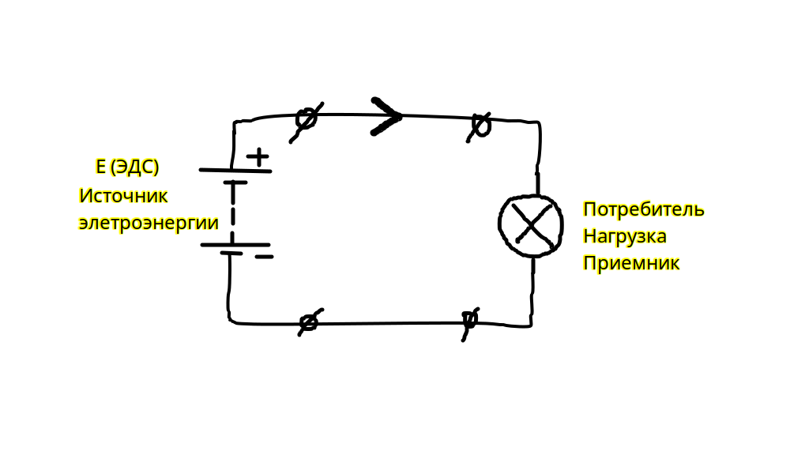
В роли потребителя электроэнергии выступает резистор R: 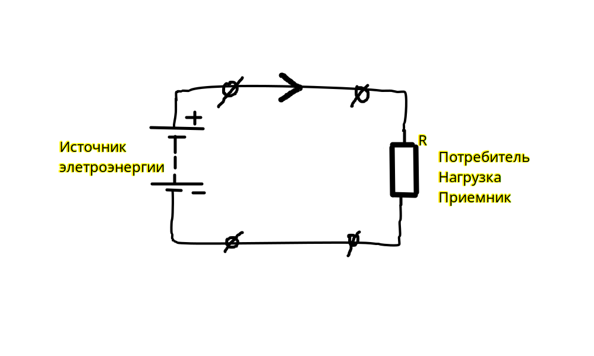
Урок 2. Электрический ток. Сила тока. Скорость и направление тока.
Электрический ток – это направленное (упорядоченное) движение электрически заряженных частиц. Представьте себе реку: вода в ней течет в определенном направлении. Точно так же и электрический ток – это поток заряженных частиц, движущихся вдоль проводника.
Направление тока в цепи — это концепция, связанная с движением электрических зарядов. Она зависит от их природы (положительные или отрицательные) и принятых условностей. Вот ключевые моменты:
1. Условное направление тока
- Исторически принято считать, что ток течёт от положительного полюса к отрицательному в цепи, то есть от области с более высоким потенциалом к области с более низким.
- Это условное направление было установлено до открытия того, что ток в металлах вызван движением отрицательных зарядов (электронов).
Роль Бенджамина Франклина
Франклин, Бенджамин предположил, что электрический заряд течет от стеклянной палочки, натертой шерстью (которую он считал заряженной положительно), к объекту, который притягивается к этой палочке.
Позже было открыто, что в металлах электрический ток образуется за счет движения электронов, которые имеют отрицательный заряд. Таким образом, реальное направление движения заряженных частиц в проводнике противоположно тому, которое предположил Франклин.
Несмотря на то, что мы знаем о движении электронов, соглашение о направлении тока, введенное Франклином, сохранилось в электротехнике. Это связано с тем, что большинство электрических схем и расчетов были разработаны до того, как было точно известно, что именно представляет собой электрический ток. Изменение устоявшегося соглашения привело бы к необходимости переписывать огромный объем технической литературы.
2. Действительное направление тока
- В металлах ток возникает за счёт движения электронов от отрицательного полюса к положительному. Это противоположно условному направлению тока.
- В электролитах (например, растворах солей) ток обеспечивается движением ионов. При этом:
- Положительные ионы (катионы) движутся к отрицательному электроду.
- Отрицательные ионы (анионы) движутся к положительному электроду.
3. Направление тока в полупроводниках
- В полупроводниках ток обусловлен движением:
- Электронов (они отрицательно заряжены) в зоне проводимости (в сторону положительного полюса).
- Положительных «дырок» (псевдозарядов) в валентной зоне, которые движутся в сторону отрицательного полюса.
4. Направление тока в зависимости от типа цепи
- Постоянный ток (DC): ток движется в одном направлении, обычно от источника напряжения.
- Переменный ток (AC): направление тока периодически меняется, так как меняется полярность источника.
5. Практическое использование направлений
- В инженерии и физике чаще используют условное направление тока, чтобы упрощать расчёты и схемы.
- Для анализа электрических цепей используют такие законы, как:
- Закон Ома: .
- Законы Кирхгофа для тока и напряжения.
Важный вывод
Хотя условное направление тока и движущиеся электроны в проводниках идут в противоположных направлениях, все расчёты остаются корректными, если придерживаться единого подхода.
Почему носители заряда движутся?
- Электрическое поле: Оно создается источником тока (например, батарейкой) и действует на заряженные частицы, заставляя их двигаться.
- Разность потенциалов: Это как разница высот в реке. Чем больше разность потенциалов, тем сильнее электрическое поле и тем быстрее движутся заряженные частицы
Сила тока
Сила тока – это количество электрического заряда, проходящего через поперечное сечение проводника за единицу времени. Измеряется в амперах (А).
Чем больше сила тока, тем больше заряженных частиц проходит через проводник за одну секунду.
Скорость движения заряженных электрических зарядов - 1 мм/сек
Скорость тока - 300 000 км/сек (скорость света)
Ток так быстро двигается из-за того что заряженные частицы хоть и медленные но порождают электромагнитную волну которая распространяется со скоростью света.
Ампер (A) - основная единица измерения силы электрического тока в Международной системе единиц (СИ).
Для обозначения более больших или меньших значений силы тока используются кратные и дольные единицы, образованные путем добавления соответствующих приставок к основной единице - амперу.
Кратные единицы тока (большие значения):
- Килоампер (kA): 1 кА = 1000 А
- Мегаампер (MA): 1 МА = 1 000 000 А
- Гигаампер (GA): 1 ГА = 1 000 000 000 А
Дольные единицы тока (малые значения):
- Миллиампер (mA): 1 мА = 0,001 А
- Микроампер (μA): 1 мкА = 0,000001 А
- Наноампер (nA): 1 нА = 0,000000001 А
- Пикоампер (pA): 1 пА = 0,000000000001 А
Таблица кратных и дольных единиц тока:
| Приставка | Обозначение | Множитель |
|---|---|---|
| кило- | k | |
| мега- | M | |
| гига- | G | |
| милли- | m | |
| микро- | μ | |
| нано- | n | |
| пико- | p |
Напряжение
Напряжение – это работа, которую совершает электрическое поле при перемещении единичного положительного заряда из одной точки электрической цепи в другую. Измеряется в вольтах (В).
Напряжение создает электрическое поле, которое заставляет заряженные частицы двигаться.
Напряжение это разность потенциалов – это работа, которую совершает электрическое поле при перемещении единичного положительного заряда из одной точки электрической цепи в другую. Разность потенциалов заставляет электроны двигаться, создавая электрический ток.
Характеризует источник питания: Например, батарейка на 1,5 В создает разность потенциалов в 1,5 вольта между своими полюсами.

Сопротивление
Сопротивление – это свойство проводника препятствовать прохождению электрического тока. Измеряется в омах (Ом).
Сопротивление зависит от материала проводника, его длины и площади поперечного сечения.
Закон Ома
Связь между силой тока, напряжением и сопротивлением описывается законом Ома:
где:
- I – сила тока (А) Ампер
- U – напряжение (В) Вольт
- R – сопротивление (Ом) Ом
Постоянный ток/напряжение/сопротивление/ЭДС маркируются большим регистром I/U/R/E
Переменный ток/напряжение/сопротивление/ЭДС маркируются малым регистром i/u/r/e
Между двумя произвольными точками цепи 1 и 2 создается напряжение U, которое равно разности потенциалов этих точек
U12
U21

При расчете схемы следует выбрать произвольно положительное направление токов и после проверки того что ток положителен выбрать это направление для всей схемы
Маркировка направления тока:

Урок 3. Резистор. Конденсатор. Катушка индуктивности. Мощность. Энергия. Проводимость.
Активные и пассивные компоненты
Электрические компоненты в цепях делятся на активные и пассивные в зависимости от их способности генерировать или потреблять энергию.
Активные компонеты
Активные компоненты способны генерировать энергию или управлять потоком электронов в цепи. Они обычно требуют внешнего источника питания для своей работы.
Такие как источники питания тока или напряжения, это:
- (Источники питания) Батареи и аккумуляторы: обеспечивают постоянный ток (DC)
- (Источники питания) Генераторы: обеспечивают переменный ток (AC)
- (Полупроводниковые устройства) Транзисторы: управляют током и работают как усилители, ключи или генераторы.
- (Полупроводниковые устройства) Тиристоры: используются в схемах управления мощностью.
Пассивные компонеты
Пассивные компоненты не могут генерировать энергию, но потребляют, хранят или передают её. Они играют вспомогательную роль в работе цепи.
Такие как:
- резистор, ограничивают ток и рассеивают энергию в виде тепла.
- конденсатор, накопители энергии в электрическом поле; используются для фильтрации и сглаживания сигналов.
- катушка индуктивности, хранят энергию в магнитном поле; используются в трансформаторах, фильтрах и схемах управления
- диоды, хотя они являются полупроводниковыми устройствами, их основная функция — пропускать ток в одном направлении, что делает их пассивными в большинстве случаев.
- трансформаторы, передают энергию, изменяя напряжение и ток. они в условиях отсутвия электрического поля не могут функционировать.
Линейные пассивные компонеты
Это линейная характеристика зависимости параметров компонета, при изменении одной характеристики линейно изменяется зависимая характеристика. График зависимости тока от напряжения для таких компонентов — прямая линия.
Примеры:
- Резисторы (идеальные): Сопротивление остаётся постоянным при любом напряжении и токе, если не выходить за рабочие пределы.
- Конденсаторы: Ёмкость не зависит от напряжения, если материал и геометрия неизменны.
- Катушки индуктивности: Индуктивность остаётся постоянной при изменении тока, если сердечник не насыщен.
Применение:
Линейные компоненты используются в цепях с предсказуемым поведением, таких как фильтры, усилители и генераторы.
Не линейные пассивные компонеты
Эти компоненты не подчиняются закону линейности, и их характеристики зависят от условий работы, таких как ток, напряжение или частота. График зависимости от — нелинейная кривая.
Основные свойства:
- Нелинейная зависимость от : Например, при увеличении напряжения сопротивление может меняться.
- Зависимость от условий работы: Влияние температуры, частоты, напряжения или других параметров.
- Эффекты насыщения и гистерезиса: Эти эффекты могут проявляться в магнитных или полупроводниковых материалах.
Примеры:
- Диоды: Пропускают ток только в одном направлении. Зависимость экспоненциальная.
- Варисторы: Их сопротивление резко падает при достижении определённого уровня напряжения (используются для защиты от перенапряжений).
- Ферромагнитные катушки (с насыщением): Индуктивность зависит от тока, когда сердечник входит в режим насыщения.
- Электролитические конденсаторы: Их ёмкость и сопротивление могут меняться в зависимости от напряжения или частоты.
- Терморезисторы (NTC/PTC):
Сопротивление изменяется с температурой:
- NTC (Negative Temperature Coefficient): сопротивление уменьшается с ростом температуры.
- PTC (Positive Temperature Coefficient): сопротивление увеличивается с ростом температуры.
Резистивный элемент (резистор)

Резистор – это линейный пассивный электронный компонент, основная задача которого – создавать сопротивление электрическому току. Представьте его как узкое горлышко в трубе: чем уже горлышко, тем сложнее воде протекать. Точно так же резистор затрудняет движение электронов в электрической цепи.
В цепях переменного тока резистор называется как активный резистор.
В цепях постоянного тока резистор так и называется - резистор или электрическим сопротивлением.
Закон Ома описывает связь между током, напряжением и сопротивлением в электрической цепи:
Где:
- — ток, измеряемый в амперах ().
- — напряжение, измеряемое в вольтах ().
- — сопротивление, измеряемое в омах ().
При последовательном соединении:
При парралельном соединение
Имя Георга Ома Закон Ома назван в честь немецкого физика Георга Симона Ома (1789–1854). В 1827 году он сформулировал основные законы электрической проводимости, которые легли в основу современной электроники. Единица сопротивления, Ом (), была названа в его честь.

Примеры применения закона Ома
-
Рассчёт тока:
Если напряжение , а сопротивление :
-
Рассчёт напряжения:
Если ток , а сопротивление :
-
Рассчёт сопротивления:
Если ток , а напряжение :
Функции резистора
- Ограничение тока:
Используется для предотвращения избыточного тока в цепи. - Разделение напряжения:
Делит напряжение между различными частями схемы. - Стабилизация работы схемы:
Ограничивает ток для правильной работы активных компонентов, таких как транзисторы или светодиоды. - Формирование сигнала:
В комбинации с конденсаторами и катушками индуктивности создаёт фильтры и временные задержки.
Основные параметры резистора
- Сопротивление (R):
Измеряется в омах () и определяет, насколько сильно резистор ограничивает ток. - Мощность (P):
Максимальная мощность, которую резистор может рассеивать без перегрева, измеряется в ваттах (Вт). - Точность (допуск):
Указывается в процентах и отражает отклонение реального сопротивления от номинального. - Температурный коэффициент сопротивления (TCR):
Показывает, как сопротивление меняется с температурой.
Типы резисторов
- Постоянные резисторы:
- Значение сопротивления фиксировано.
- Примеры: углеродные, металлоплёночные, проволочные.
- Переменные резисторы:
- Сопротивление можно изменять вручную.
- Примеры: потенциометры, подстроечные резисторы.
- Специальные резисторы:
- Терморезисторы (NTC/PTC): изменяют сопротивление в зависимости от температуры.
- Фото резисторы: меняют сопротивление под воздействием света.
Цветовая маркировка резисторов
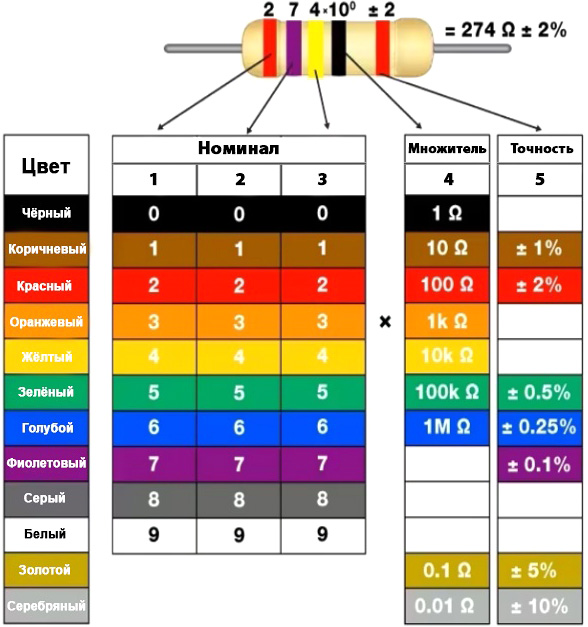
Первые две полоски абсолютно всегда обозначают первые две цифры номинального сопротивления резистора. Если всего полосок 3 или 4, то третья полоса будет означать множитель, на который необходимо умножить число, полученное из первых двух полос. Когда на резисторе 4 полосы, то четвертая будет указывать на точность резистора. В случае, когда полос 5, первые три полосы означают три цифры номинала (сопротивления) резистора, четвертая - множитель, пятая - точность.
Калькулятор цветовой маркировки резисторов
Проводимость (𝐺)
Проводимость — это величина, обратная сопротивлению (𝑅), которая характеризует способность проводника или компонента проводить электрический ток. Чем выше проводимость, тем легче ток проходит через элемент цепи.
Проводимость рассчитывается как:
Где:
- — проводимость, измеряется в сименсах (S).
- — сопротивление, измеряется в омах ().
Единица проводимости в Международной системе единиц (СИ) называется сименс (S или См), в честь немецкого учёного Эрнста Вернера фон Сименса.
.
Если в ветви есть как сопротивление , так и источник ЭДС с внутренним сопротивлением , то полное сопротивление ветви определяется как их сумма:
Если
Если то потому что
Проводимость ветви
Проводимость — это величина, обратная сопротивлению:
где:
- — проводимость ветви (в сименсах, См),
- — общее сопротивление ветви,
- — сопротивление нагрузки,
- — внутреннее сопротивление источника.
Пример расчета
Допустим:
- ,
- ,
Тогда:
Таким образом, проводимость ветви составит 0.0833 См.
Связь проводимости с законом Ома
Закон Ома через проводимость записывается так:
Где:
- — ток (A).
- — проводимость (S или См).
- — напряжение (V).
Если сопротивление компонента велико , то проводимость стремится к нулю , и ток практически не проходит. Наоборот, если сопротивление мало , проводимость становится большой, что позволяет току свободно протекать.
Физическая интерпретация
- Проводимость показывает, насколько эффективно материал или элемент цепи передаёт ток.
- Материалы с высокой проводимостью (G) называют проводниками, такие как медь, серебро и алюминий.
- Материалы с низкой проводимостью (G) называют диэлектриками, такие как стекло или пластик.
Удельная проводимость ()
Для материалов проводимость на единицу объёма называется удельной проводимостью и определяется как:
Где:
- — удельная проводимость ().
- — удельное сопротивление ( ).
Примеры расчёта
-
Если сопротивление резистора (), то проводимость:
-
Для проводника с удельной проводимостью () и площадью поперечного сечения (), длиной ():
Мощность
Мощность (𝑃) — это физическая величина, которая показывает скорость изменения (передачи или преобразования) энергии во времени.
ватт, (𝑊)
Где:
- — проводимость (S или См).
1 ватт (1 𝑊) = 1 джоуль энергии, преобразованной за 1 секунду.
Применение в электротехнике
В электрических цепях мощность можно выразить через ток (I) и напряжение (U):
Разные формы выражения:
-
Если известно сопротивление (R) и ток (I):
-
Если известно напряжение (U) и сопротивление (R):
Примеры расчёта
-
Если прибор подключён к сети с напряжением (), и он потребляет ток (), мощность будет:
-
Для резистора с сопротивлением () и током ():
Энергия
Энергия — это физическая величина, которая характеризует способность системы совершать работу. Она является одной из фундаментальных характеристик природы и играет ключевую роль во всех физических процессах.
В электротехнике и физике энергия обозначается буквой W и измеряется в джоулях (Дж) в Международной системе единиц (СИ).
Формы энергии:
-
Кинетическая энергия: Энергия, связанная с движением тела.
где
- — масса тела,
- — скорость тела.
-
Потенциальная энергия: Энергия, связанная с положением тела в поле сил (например, гравитационном или электрическом).
где
- — масса тела,
- — ускорение свободного падения,
- — высота над уровнем отсчета.
-
Внутренняя энергия: Энергия, связанная с движением и взаимодействием частиц внутри системы (например, в тепловых процессах).
-
Электрическая энергия: Энергия, связанная с движением зарядов в электрическом поле.
где
- — напряжение,
- — ток,
- — время.
-
Магнитная энергия: Энергия, запасённая в магнитном поле, например, в катушках индуктивности:
где
- — индуктивность,
- — ток.
-
Механическая энергия: Сумма кинетической и потенциальной энергии.
Свойства энергии:
-
Сохранение энергии: Энергия не создаётся и не исчезает, она может только преобразовываться из одной формы в другую.
-
Измерение: Основная единица измерения энергии — джоуль (Дж).
Ватт-секунда — это эквивалент джоуля.
Другие единицы:
- кВт·ч (киловатт-час) для электрической энергии.
- калории для тепловой энергии.
-
Превращение энергии:
- Химическая энергия батареи может быть преобразована в электрическую.
- Электрическая энергия может быть преобразована в механическую (например, в электродвигателе).
Примеры в электротехнике:
-
Энергия, выделяемая резистором:
где
- — сопротивление,
- — ток,
- — время.
Пример:
Если лампа мощностью 100 Вт работает в течение 10 секунд, её энергия будет:
-
Энергия конденсатора:
где
- — ёмкость,
- — напряжение на конденсаторе.
Энергия играет ключевую роль в понимании работы электрических цепей, механических систем, тепловых процессов и многих других явлений.
Индуктивный элемент

Индуктивный элемент — это линейный компонент электрической цепи, который обладает свойством индуктивности, то есть способностью накапливать энергию () в виде магнитного поля при прохождении через него электрического тока. Индуктивные элементы играют важную роль в цепях переменного тока и в схемах, где требуется управление или фильтрация сигналов.
Схема замещения идеального реактивного элемента:
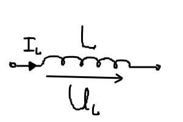
Схема реального реактивного элемента т.е. он обладает каким-то сопротивлением, резистор подключенным последовательно с индуктивностью, на плате резистор будет но на схеме замещения резистора не будет:
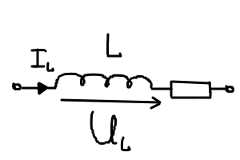
Пример индуктивного элемента:
- Катушка индуктивности (индуктивность) — это наиболее распространённый индуктивный элемент. Она состоит из проводника, намотанного в виде спирали, что создаёт магнитное поле при прохождении тока. При этом ее индуктивность значительно выше чем ее внутреннее сопротивление.
Основные характеристики индуктивного элемента:
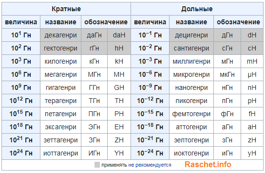
-
Индуктивность (L):
- Измеряется в генри (Гн).
- Миллигенри (мГн):
- Микрогенри (мкГн):
- Определяет способность элемента накапливать магнитную энергию.
- Чем больше витков провода в катушке и чем выше проницаемость сердечника, тем больше индуктивность.
(напряжение на индуктивности стремиться к 0 в цепи постоянного тока)
где:
— магнитный поток через площадь, ограниченную одним виткомМагнитное потоксосцепление: [веберов]
Магнитное потокосцепление — это физическая величина, характеризующая взаимодействие магнитного поля и электрической цепи, в частности, катушки. Оно численно равно произведению магнитного потока через площадь, ограниченную контуром витка, на число витков контура.
Закон электромагнитной индукции Фарадея: ЭДС индукции в контуре пропорциональна скорости изменения магнитного потоксосцепления.
- Измеряется в генри (Гн).
-
Энергия магнитного поля:
-
Накапливаемая энергия выражается формулой:
где
- — энергия (Дж),
- — индуктивность (Гн),
- — ток (А).
-
-
ЭДС самоиндукции:
-
Когда ток через индуктивный элемент изменяется, в нём возникает электродвижущая сила (ЭДС) самоиндукции, которая препятствует изменению тока:
где
- — ЭДС (В),
- — скорость изменения тока.
-
Поведение индуктивного элемента в цепи:
-
Постоянный ток:
- Индуктивный элемент ведёт себя как обычный проводник с очень малым сопротивлением, так как магнитное поле стабилизируется.
-
Переменный ток:
-
Индуктивный элемент сопротивляется изменениям тока, создавая реактивное сопротивление:
где
- — индуктивное сопротивление,
- — круговая частота,
- — частота сигнала.
-
Применения индуктивных элементов:
- Фильтры и контуры:
- Используются для фильтрации сигналов в радиочастотных цепях.
- Трансформаторы:
- Индуктивные элементы с магнитной связью между катушками.
- Электродвигатели и генераторы:
- Принципы работы основаны на индуктивности.
- Энергетические системы:
- Индуктивности применяются для сглаживания переменного тока или ограничения пусковых токов.
Индуктивные элементы являются ключевыми компонентами в электротехнике и электронике, обеспечивая важные функции в управлении токами, энергией и сигналами.
Емкостной элемент
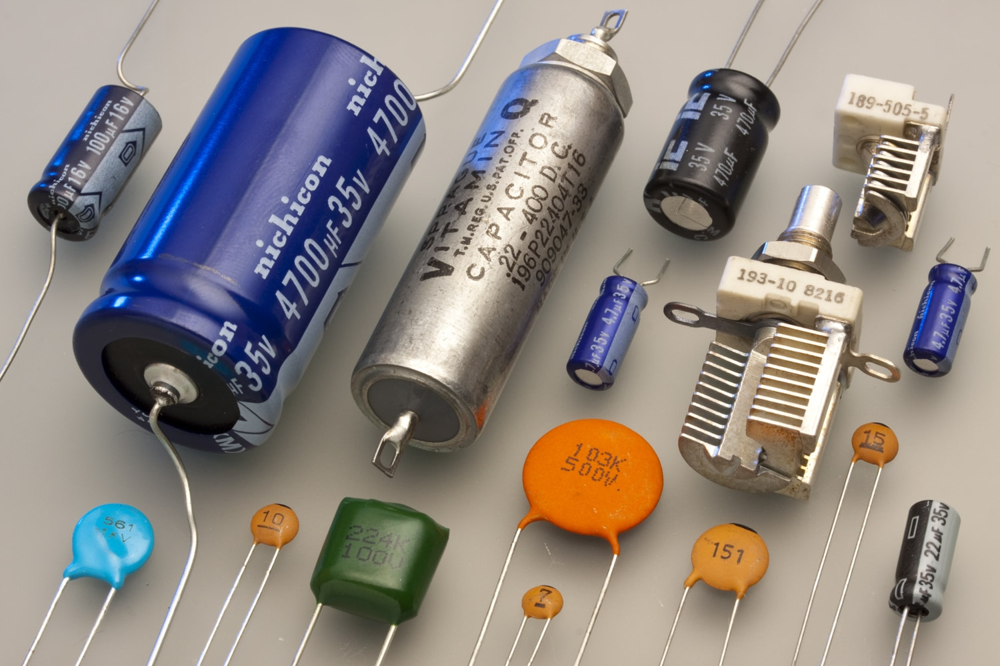
Емкостной элемент — это линейный компонент электрической цепи, который обладает свойством ёмкости, то есть способностью накапливать электрический заряд (количество электрики) и энергию в электрическом поле между своими обкладками. Основным представителем емкостных элементов является конденсатор либо две метталические пластины рядом расположенные.
Схема замещения емкости:
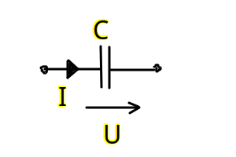
В тепи постоянного тока после времени заряда кондекнсатора, ток на конденсаторе будет равен 0, а напряжение будет равно источнику питания.
График заряда и разряда конденсатора:

Так как между выводами конденсатора может протекать ток утечки, поэтому реальный конденсатор с влияющими на цепь токами утечки используют шунтированный резистором кондексатор т.е. параллельно подкоюченный резистор, на плате резистор будет но на схеме замещения резистора не будет:
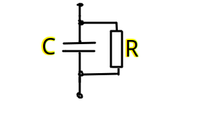
Основные характеристики емкостного элемента:
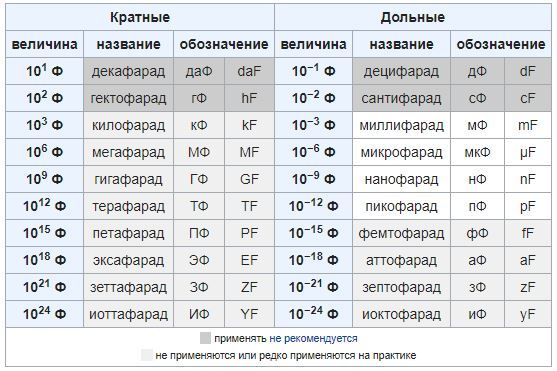
-
Ёмкость ():
-
Измеряется в фарадах (Ф) (конвертер).
-
Миллифарад (мкФ): 1 мкФ = Ф (0.001 Ф)
-
Микрофарад (мкФ): 1 мкФ = Ф (0.000001 Ф)
-
Нанофарад (нФ): 1 нФ = Ф (0.000000001 Ф)
-
Пикофарад (пФ): 1 пФ = Ф (0.000000000001 Ф)
Выбор фарада в качестве единицы измерения емкости связан с именем известного английского физика Майкла Фарадея, внесшего значительный вклад в изучение электромагнетизма.
-
-
Определяет способность элемента накапливать заряд при заданном напряжении.
-
Формула для ёмкости:
где
- — ёмкость,
- — заряд (Кл),
- — напряжение (В).
-
-
Энергия электрического поля:
-
Ёмкостный элемент накапливает энергию в виде электрического поля между обкладками.
-
Формула для накопленной энергии:
где
- — энергия (Дж),
- — ёмкость (Ф),
- — напряжение (В).
-
-
Ток через конденсатор:
-
Зависит от скорости изменения напряжения:
где
- — ток (А),
- — ёмкость (Ф),
- — скорость изменения напряжения (В/с).
-
Поведение емкостного элемента в цепи:
-
Постоянный ток:
- Конденсатор блокирует постоянный ток, так как его обкладки разделены диэлектриком, и через него не проходит ток после зарядки. Зарядка продолжается до тех пор, пока напряжение на обкладках конденсатора не станет равным напряжению источника. Однако это не означает, что цепь перестаёт работать. Давайте разберёмся подробнее.
Как цепь постоянного тока работает дальше?
-
При постоянном токе:
- Если в цепи нет других элементов, кроме конденсатора и источника постоянного напряжения, то после зарядки конденсатора ток в цепи прекратится.
- Цепь "замыкается" через электрическое поле конденсатора, но ток (перенос зарядов) не течёт.
-
Цепь с нагрузкой:
- Если в цепи есть дополнительная нагрузка (например, резистор), после зарядки конденсатора ток через нагрузку может продолжать течь, если конденсатор разряжается через неё.
- В реальных схемах часто используются комбинации резисторов, индуктивностей и конденсаторов, обеспечивающих различные режимы работы.
-
Переменный ток:
-
Емкостный элемент пропускает переменный ток, создавая реактивное сопротивление:
где
- — емкостное сопротивление (),
- — частота ().
Однако это не означает, что цепь перестаёт работать. Давайте разберёмся подробнее.
Как цепь переменного тока работает дальше?
- В цепях переменного тока напряжение постоянно меняется.
- Это изменение напряжения приводит к постоянной зарядке и разрядке конденсатора, создавая ток через цепь.
- Формально, ток в цепи создаётся за счёт изменения электрического поля между обкладками.
-
Применение емкостных элементов:
- Фильтры:
- Используются для фильтрации высоких или низких частот.
- Сглаживание пульсаций:
- Применяются в блоках питания для сглаживания переменного напряжения.
- Энергетические хранилища:
- Конденсаторы накапливают энергию для кратковременной выдачи.
- Частотные контуры:
- В комбинации с индуктивными элементами образуют резонансные контуры.
Типы емкостных элементов:
- Постоянные конденсаторы:
- Полярные (например, электролитические).
- Неполярные (например, керамические или плёночные).
- Переменные конденсаторы:
- Ёмкость которых можно изменять механически или электрически.
Емкостные элементы играют ключевую роль в электронике и электротехнике, обеспечивая функции накопления заряда, фильтрации сигналов и управления энергией.
Урок 4. Источник напряжения идеальный и реальный.
Источники питания
Источники питания — это активные компоненты, это устройства или системы, которые обеспечивают электрической энергией различные потребители (электрические цепи, устройства, машины и т.д.). Они преобразуют и регулируют энергию из различных источников, таких как батареи, генераторы, или электрическая сеть. Если внутреннее сопротивление источника питания намного меньше сопротивления нагрузки то данный источник питания можно представить как источник напряжения ()
Классификация источников питания:
Два типа источника питания
- Источник напряжения (ЭДС)
- Источник тока
1. По типу преобразуемой энергии:
- Химические источники:
Используют химическую энергию, преобразуя её в электрическую.
Примеры: батарейки, аккумуляторы. - Электромеханические источники:
Преобразуют механическую энергию в электрическую.
Примеры: генераторы. - Тепловые источники:
Преобразуют тепловую энергию в электрическую.
Примеры: термоэлектрические генераторы. - Фотовольтаические источники:
Преобразуют солнечную энергию в электрическую.
Примеры: солнечные панели.
2. По форме выходного сигнала:
- Источники постоянного тока (DC):
Обеспечивают стабильное напряжение или ток.
Примеры: батареи, выпрямители, DC-адаптеры. - Источники переменного тока (AC):
Выдают переменный ток, часто синусоидальной формы.
Примеры: электрическая сеть, генераторы переменного тока.
3. По функциональным особенностям:
- Регулируемые источники питания:
Позволяют изменять выходное напряжение или ток в заданных пределах.
Применяются в лабораториях, измерительных системах. - Нерегулируемые источники:
Выдают фиксированное напряжение или ток.
Примеры: обычные зарядные устройства. - Импульсные источники питания:
Преобразуют напряжение с высокой эффективностью за счёт работы на высокой частоте.
Примеры: блоки питания для компьютеров, зарядные устройства.
4. По количеству выходных каналов:
- Одноканальные:
Имеют один выход с заданными характеристиками. - Многоканальные:
Позволяют подключать несколько устройств с разными требованиями к питанию.
Основные параметры источников питания
-
Номинальное напряжение ():
Напряжение, которое источник питания обеспечивает на выходе. -
Выходной ток ():
Максимальный ток, который может обеспечить источник. -
Мощность ():
Общая электрическая мощность, отдаваемая потребителям. -
Коэффициент полезного действия (КПД):
Отношение отдаваемой мощности к потребляемой. -
Стабильность выходного напряжения:
Способность поддерживать напряжение при изменении нагрузки.
Типовые источники питания
1. Батареи и аккумуляторы:
- Переносные и автономные.
- Применяются в мобильных устройствах, транспортных средствах.
- Пример: литий-ионные аккумуляторы.
2. Сетевые блоки питания:
- Работают от электрической сети переменного тока.
- Включают трансформатор, выпрямитель и регуляторы.
3. Генераторы:
- Производят электрическую энергию из механической.
- Используются в автономных системах и для аварийного питания.
4. Солнечные панели:
- Вырабатывают энергию из солнечного света.
- Эффективны в удалённых местах или в качестве экологичного источника.
5. Импульсные источники питания:
- Высокая эффективность и компактность.
- Используются в современных электронных устройствах.
Применение источников питания
- Электроника: питание микросхем, компьютеров, телефонов.
- Электротехника: запуск двигателей, подача энергии в сети.
- Освещение: светодиоды, лампы накаливания.
- Энергетика: генерация и распределение энергии.
Источники питания — это основа работы электрических устройств, от бытовой техники до сложных промышленных систем.
Источник напряжения (ЭДС, )
Основная задача источника напряжения — поддерживать постоянное или заданное напряжение, независимо от подключённой нагрузки в пределах своих возможностей.
Основные параметры источника напряжения являеться электродвижущая сила и внутреннее сопротивление Основным свойством источника напряжения являеться создавать и поддерживать разность потенциалов на участке цепи. Внутреннее сопротивление источника питания позволяет учитывать потери энергии и снижение напряжения в нем. Ток внутри источника питания питания протекает от более низкого потенциала к более высокому потенциалу.
Схема замещения идеального источника напряжения (ЭДС):
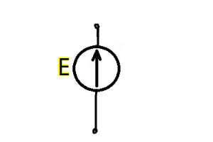
Схема замещения рального источника напряжения (ЭДС):
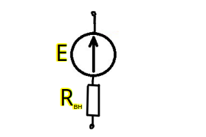
ЭДС (Электродвижущая сила)
Электродвижущая сила () — это физическая величина, характеризующая работу, которую источник выполняет по перемещению заряда в цепи. Она измеряется в вольтах (В). ЭДС часто упрощённо называют "напряжением источника", хотя это не совсем одно и то же.
где:
- — работа по перемещению заряда ,
- — заряд.
Виды источников напряжения
1. Идеальный источник напряжения
-
Описание:
Теоретический источник, который всегда поддерживает фиксированное напряжение на своих клеммах, независимо от силы тока и нагрузки. -
Особенности:
- Не имеет внутреннего сопротивления ().
- Напряжение на выходе всегда равно ЭДС ().
-
ВАХ (внешняя/выходная характеристика) источника напряжения:
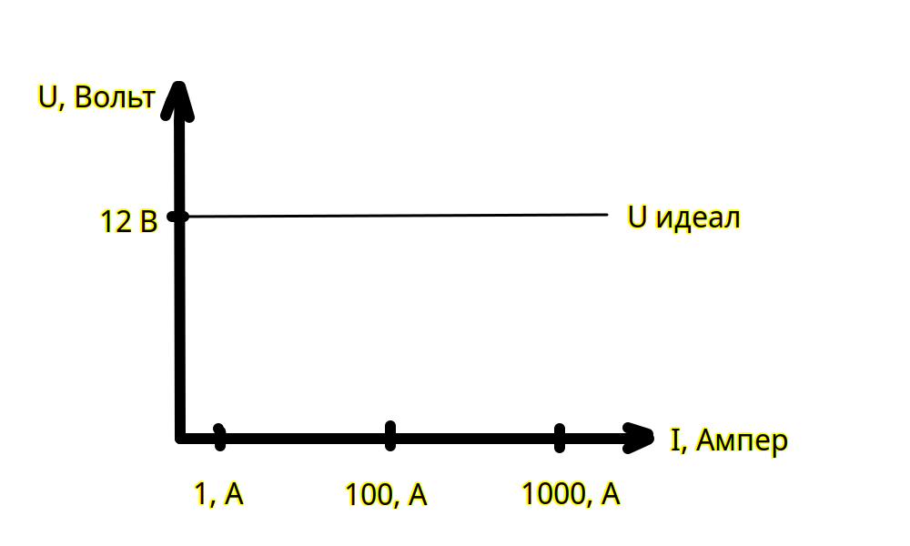
Увеличение нагрузки т.е. тока это равносильно снижению сопротивления. И наоборот при повышении сопротивления у нас повышается нагрузка т.е. повышается ток
Даже при коротком замыкании (кз), когда сопротивление стремиться к 0 то идеальный источник питания должен поддерживать стабильно напряжение ну и ток будет стремиться к бесконечности ну и следовательно мощность идеального источника питания тоже сремится к бесконечности
2. Реальный источник напряжения
ВАХ (внешняя/выходная характеристика) источника напряжения:
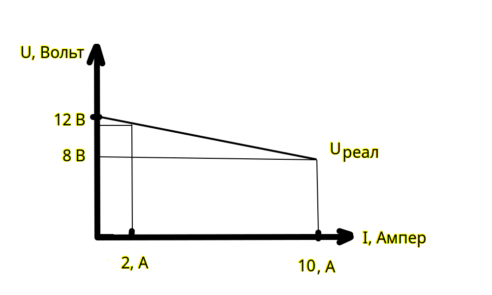
В качественном источнике напряжения, падение напряжение не сильно снижает ток т.е. почти прямая линия как у идеального источника напряжения.
- Описание:
Учитывает наличие внутреннего сопротивления , которое ограничивает максимальный ток. - Особенности:
-
Напряжение на выходе уменьшается при увеличении тока нагрузки из-за падения напряжения на .
-
В условиях отсутвия нагрузки, напряжение холостого хода равно напряжению источника ЭДС
-
Внутреннее сопротивление намного меньше сопротивление нагрузки
-
В условиях присутвия нагрузки, наряжение на выводах источника напряжения будет меньше чем на источнике ЭДС, потому что часть напряжения забирает внутреннее сопротивление источника ЭДС
С ростом тока нагрузки будет снижаться напряжение ЭДС и наоборот, с радением тока нагрузки, растет напряжение на ЭДС:
-
Основные параметры источников напряжения
-
ЭДС ():
Максимальное напряжение, которое источник может создать в идеальных условиях. -
Внутреннее сопротивление ():
Сопротивление внутри источника, влияющее на выходное напряжение при протекании тока. -
Номинальное напряжение ():
Напряжение, которое источник должен обеспечивать при нормальной нагрузке. -
Номинальная мощность ():
Максимальная мощность, которую источник способен выдавать. -
Короткозамыкательный ток ():
Ток, который протекает при коротком замыкании клемм источника.
Примеры источников напряжения
-
Химические источники:
Батареи и аккумуляторы (например, литий-ионные батареи). -
Электромеханические источники:
Электрогенераторы, создающие напряжение за счёт движения магнитного поля относительно обмоток. -
Фотоэлектрические элементы:
Солнечные панели, преобразующие световую энергию в электрическую. -
Сетевые источники:
Трансформаторы и выпрямители, обеспечивающие питание бытовых приборов от электрической сети.
Пример работы источника напряжения
-
Если к батарее с ЭДС и внутренним сопротивлением подключить нагрузку с сопротивлением :
Напряжение на нагрузке:
Роль источников напряжения в электрических цепях
Источники напряжения являются основой функционирования электрических цепей, обеспечивая работу всех подключённых устройств — от ламп накаливания до сложных микропроцессоров.
Урок 5. Источник тока идеальный и реальный.
Источник тока
Источник тока — это устройство или система, которая поддерживает постоянную силу тока в электрической цепи независимо от изменения сопротивления нагрузки в пределах своих возможностей. Примерами источника тока могут быть: катушка индуктивности либо аккумулятор с парралельно подключенным резистором. Если внутреннее сопротивление источника питания намного больше чем внешнее сопротивление нагрузки то данный источник питания можно представить как источник тока () иначе если внутреннее сопротивление источника питания намного меньше сопротивления нагрузки то данный источник питания можно представить как источник напряжения ()
Виды источников тока
-
Идеальный источник тока
- Теоретическая модель, которая поддерживает фиксированный ток через нагрузку, независимо от её сопротивления.
- Напряжение на выходе может изменяться бесконечно, чтобы компенсировать изменения нагрузки.
- При бесконечно увеличивающемся сопротивлении нагрузки у нас будет бесконечно увеличиваться напряжение нагрузки. И наоборот, при снижении сопротивления нагрузки у нас будет снижаться напряжение нагрузки.
- Схема замещения идеального источника тока:

- ВАХ (внешняя/выходная характеристика) источника тока:
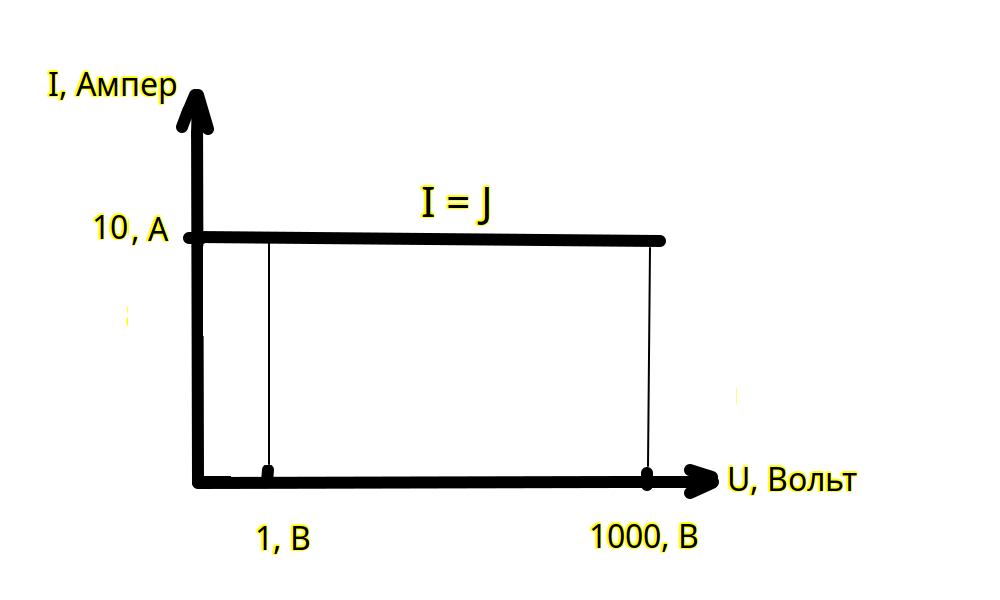
- При то
-
Реальный источник тока
-
Учитывает ограничения, такие как максимальное выходное напряжение и внутреннее сопротивление.
-
При достижении предельного напряжения на нагрузке ток перестаёт быть постоянным.
-
- С увеличением напряжения будет снижаться выходной ток источника питания
-
Схема замещения реального источника тока. Параллельное подключение резистора:
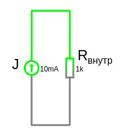
- ВАХ (внешняя/выходная характеристика) реального источника тока:

-
Основные характеристики источника тока
-
Сила тока ()
- Значение тока, которое источник поддерживает в цепи.
-
Максимальное напряжение ()
- Максимальное напряжение, которое может быть создано источником для поддержания заданного тока.
-
Внутреннее сопротивление ()
- Определяет, как источник ведёт себя при изменении сопротивления нагрузки. Для реальных источников обычно очень велико, приближаясь к бесконечности в идеальном случае.
Уравнение для реального источника тока
Для реального источника тока связь между током, напряжением и нагрузкой определяется выражением:
где:
- — напряжение на внутреннем сопротивлении источника и нагрузке,
- — сопротивление нагрузки.
Пример работы источника тока
-
Если реальный источник поддерживает ток при нагрузке , то напряжение на нагрузке составит:
-
Если нагрузка увеличится до , напряжение возрастёт до:
При этом ток останется неизменным, если источник находится в пределах своего рабочего диапазона.
Применение источников тока
-
Зарядка аккумуляторов:
Поддержание постоянного тока для зарядки батарей. -
Светодиоды (LED):
Питание светодиодов, которые требуют постоянного тока для стабильной работы. -
Тестирование электрических цепей:
Использование источника тока для проверки характеристик цепей и компонентов. -
Медицинское оборудование:
В устройствах для стимулирования мышц и нервов, где требуется точный контроль тока.
ВАХ источника тока
-
Идеальный источник тока:
ВАХ представляет собой горизонтальную линию. Ток остаётся постоянным (), независимо от изменения напряжения. -
Реальный источник тока:
ВАХ сначала выглядит как горизонтальная линия, но затем ток начинает уменьшаться при достижении максимального напряжения ().
Источник тока является фундаментальным компонентом в электротехнике и электронике, обеспечивая стабильный ток в самых различных приложениях.
Урок 6. Электрическая цепь. Узел, ветвь, контур.

dzen.ru Узлы, ветви и контуры в электрических цепя
Электрическая цепь – это совокупность элементов (источники тока, резисторы, конденсаторы и др.), соединенных проводниками для передачи электрической энергии. Чтобы анализировать и рассчитывать такие цепи, вводятся понятия узла, ветви и контура.
Узел
Узел – это точка соединения трех и более проводников в электрической цепи. Представьте, что это перекресток, где сходятся несколько дорог. В узле потенциал одинаков для всех подключенных к нему элементов.
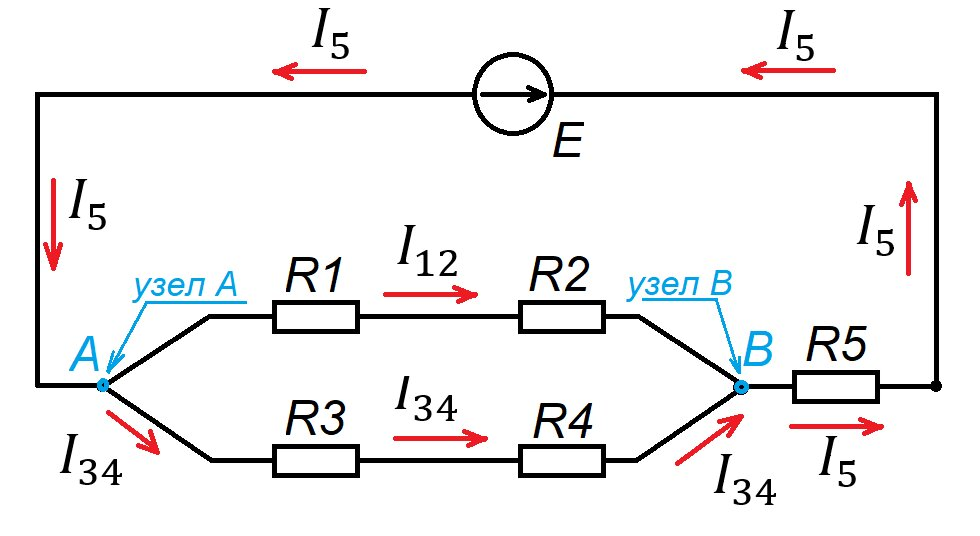
Ветвь
Ветвь – это участок электрической цепи между двумя узлами, по которому течет один и тот же ток. Ветвь может содержать один или несколько элементов.
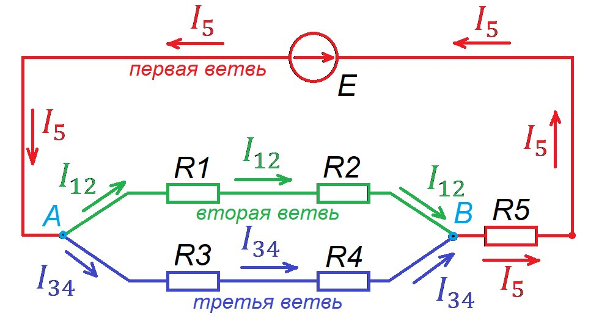
Контур
Контур – это любой замкнутый путь в электрической цепи, проходящий через несколько ветвей и узлов.
Подсчёт всех контуров - дело сложное, муторное и бесцельное. При решении практических задач не нужно подсчитывать все контуры в цепи. Для составления уравнений по законам Кирхгофа выбираются так называемые независимые контуры.
Независимый контур - это контур электрической схемы, который включает в себя хотя бы одну ветвь, которой нет в предыдущих найденных контурах, и хотя бы одну ветвь, содержащуюся в предыдущих контурах.
Два независимых контура среди этих трех контуров.
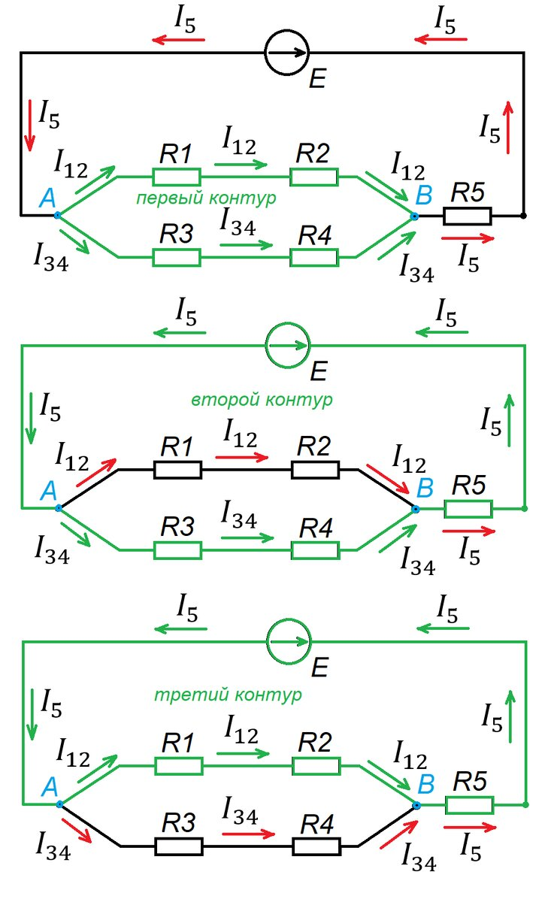
Важность этих понятий
Понимание этих понятий необходимо для:
- Анализа электрических цепей: Разделение цепи на узлы, ветви и контуры упрощает ее анализ.
- Составления уравнений: Законы Кирхгофа, основанные на этих понятиях, позволяют составлять уравнения для расчета токов и напряжений в цепи.
- Построения схем: При проектировании электрических схем необходимо учитывать взаимосвязи между узлами, ветвями и контурами.
Законы Кирхгофа
Для анализа электрических цепей используются два основных закона Кирхгофа:
- Первый закон Кирхгофа (закон токов): Алгебраическая сумма токов, сходящихся в узле, равна нулю. Это означает, что в любой точке цепи количество заряда, втекающего в нее, равно количеству заряда, вытекающего из нее.
- Второй закон Кирхгофа (закон напряжений): Алгебраическая сумма напряжений на всех элементах замкнутого контура равна нулю. Это означает, что при обходе любого замкнутого контура сумма падений напряжения равна сумме ЭДС.
Заключение
Понятия узла, ветви и контура являются фундаментальными для анализа электрических цепей. Они позволяют систематизировать подход к решению задач и применять математические методы для расчета характеристик цепей.
Урок 7. Закон Ома. Три формы записи.
Закон Ома
Закон Ома описывает зависимость между напряжением (), током () и сопротивлением () в электрической цепи. Формулируется следующим образом:
Где:
- — сила тока в амперах (),
- — напряжение в вольтах (),
- — электрическое сопротивление в омах ().
Три формы записи закона Ома
I Закон Ома для участка цепи с пассивными элементами:
где:
- — напряжение на нагрузке (В). Это напряжение на всей оставшейся части цепи которое подходит к точкам данной ветви.
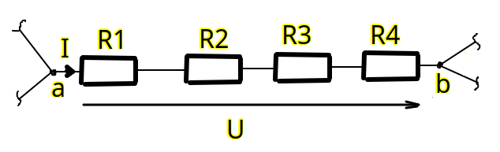
II Закон Ома для участка цепи с источником ЭДС (присутствие активных компонентов):
Сила тока на участке цепи с ЭДС равна часному отделения. В числителе напряжение на участке направление которого соврадает с током плюс алгебраическая сумма всех ЭДС участка цепи, в знаменателе арифметическая сумма всех сопротивление пассивных компонентов плюс арифметическая сумма всех внутренних сопротивление источников ЭДС.
Алгебраическая сумма — учитывает знаки, т.е. учитывает направление тока.
Арифметическая сумма — не учитывает знаки.
Формула гибкая и зависит от того, как ты обозначаешь направления напряжений и ЭДС.
Это означает, что если напряжение направлено в ту же сторону, что и ток, то оно берется со знаком "+".
Если же оно направлено против тока, то его надо записать со знаком "-" (что и приводит к виду)
где:
- — это внутреннее сопротивление ЭДС. Часто пишут, просто через запятую.
- — напряжение на нагрузке (В)
- — ЭДС источника (В),
применяется в этом типе закона Ома из-за того что напряжение как следует из второй закон Кирхгофа (закон напряжений) следует что в замкнутом контуре (которым и является ветвь если замнуть ее крайние точки между собой) должно удовлетворятся условие — сумма напряжений в любом замкнутом контуре равна нулю. Это означает, что если мы "обходим" контур, то сумма всех падений напряжения (включая ЭДС и падения на сопротивлениях) должна быть равна нулю. И так как после этих точек есть какое-то количество других ветвей, это не важно, главное что крайние точки нашей ветви обладают какой-то суммой падений наряжений, которые должны учитываться в нашей ветви так как у нас есть источник ЭДС, вот это и учитывается!
Вообщем, первая запись закона Ома для участка цепи с пассивными элементами тоже имеет , но у нас есть источник ЭДС в ветви, поэтому мы должны его учитывать
Также можно записать:
То есть напряжение на нагрузке будет меньше ЭДС на величину падения напряжения на внутреннем сопротивлении источника. Так как ЭДС входит в сумму всех падений напряжений.

где:
- — прибавляем так как ЭДС совпадает с направлением тока (алгебраическая сумма)
- — отнимаем так как ЭДС не совпадает с направлением тока (алгебраическая сумма)
Пример расчета тока по закону Ома для участка цепи с источником ЭДС
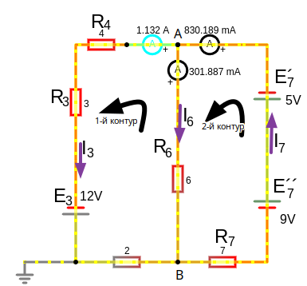
Выбрав произвольно направления токов и направления обхода 2-x независимых контуров, нам потребуется составить уравнение по первому правилу Кирхгофа, и . Итого уравнения.
Для узла А по первому правилу Кирхгофа:
Для 1-го контура по второму правилу Кирхгофа:
Для 2-го контура по второму правилу Кирхгофа:
решив эту систему уравнений получим:
Теперь мы можем проверить формулу рачета тока по закон Ома для участка цепи с источником ЭДС
для тока
где:
- − так как совпадает с направлением тока
- − так как не совпадает с направлением тока
- − это внешнее напряжение источника для ветви в которой течет ток . Это напряжение между точка A,B
, подставляем:
где:
− так как совпадает направление внешнего напряжения с направлением тока
И для тока внешнее напряжение источника тоже будет между точка A,B:
где:
− так как не совпадает направление внешнего напряжения с направлением тока
III Закон Ома для замкнутой не развлетленной цепи состоящей из одной ветви:
Неразветвленная электрическая цепь — это такая цепь, в которой все элементы соединены последовательно, то есть образуют один непрерывный путь для протекания электрического тока. Другими словами, в такой цепи нет узлов, где ток может разделиться на несколько ветвей.
Ток для всех компонентов цепи будет одинаковым из-за того что цепь не развлетленная.
Примеры неразветвленных цепь:
- Гирлянда новогодних лампочек: Лампочки соединены последовательно, образуя неразветвленную цепь.
- Простой фонарик: В фонарике батарейка и лампочка соединены последовательно.
Сила тока пропорциональна алгебраической сумме всех ЭДС и обратнопропорциональна арифметической сумме всех пассивных элементов и внутренних сопротивлений источников ЭДС
Выбираем предпологаемое направление тока:

Параметры:
- R3 = 5 Ом
- E2 = 15 В
- R2 = 15 Ом
- R1 = 10 Ом
- E1 = 25 В
- R5 = 25 Ом
- E4 = 35 В, r4 = 5 Ом
- R4 = 5 Ом
- E3 = 25 В, r3 = 5 Ом
где:
- — говорит нам что мы выбрали неверное направление тока, ток будет протекать в противоположном направлении
В программе www.falstad.com можно нарисовать схему и запустить, мы видим направление движения тока и если навести курсов на элемент то увидим показатели тока 0.714,A

Зеленый цвет обозначает положительное напряжение. Серый цвет обозначает заземление. Красный цвет обозначает отрицательное напряжение.
Видно как суммируется вольтаж если у источников ЭДС совпадает направление. Для самое низкое напряжение на участке получилось в следствии того что, напряжение двигалось от c 61 вольтами и понижаясь постепенно от сопротивлений и встретило с противоложным знаком, в итоге напряжение иточчника 25 вольт отнялось от пришедших 43 вольт и получилось 18 вольт, если бы по какой-то причине ЭДС был больше чем пришедшие к нему 43 вольта то ток протекал бы в противоположную т.е. туда куда этот ЭДС выдает +. На распределение напряжений влияет нулевой потенциал заземления, с него начинается просчет.
Почему заземление влияет на распределение напряжений:
- Создание нулевого потенциала: Точка заземления условно принимается за ноль потенциала. Все остальные точки схемы имеют напряжение относительно этой точки.
- Заземление - это точка отсчета потенциалов: Все напряжения в схеме измеряются относительно точки заземления. Когда вы меняете место заземления, вы фактически меняете точку отсчета, что приводит к изменению всех напряжений в схеме.
- Обеспечение безопасных условий: Заземление отводит статические заряды и токи утечки в землю, снижая риск поражения электрическим током.
- Выравнивание потенциалов: Заземление помогает выравнивать потенциалы различных точек схемы, предотвращая возникновение опасных разностных потенциалов.
- Создание опорного потенциала: Заземление служит точкой отсчета для измерения напряжений в схеме.
- Влияние на импеданс схемы: Заземление может изменять импеданс схемы, особенно на высоких частотах, что может повлиять на ее работу.
Что означает отрицательное напряжение:
- Положительное напряжение означает, что потенциал относительно опорной точки выше.
- Отрицательное напряжение означает, что потенциал относительно опорной точки ниже.
- Направление электрического поля: Отрицательное напряжение означает, что электрическое поле направлено в противоположную сторону по сравнению с выбранным направлением отсчета.
- Разность потенциалов: Отрицательное напряжение указывает на то, что точка измерения имеет более низкий потенциал, чем точка отсчета.

Закон Ома в зависимости от искомой величины:
-
Для силы тока:
-
Для напряжения:
-
Для сопротивления:
Физический смысл закона Ома
- Сила тока прямо пропорциональна приложенному напряжению и обратно пропорциональна сопротивлению цепи.
- Чем больше сопротивление, тем меньше ток при одном и том же напряжении.
- Чем выше напряжение, тем больше ток при одном и том же сопротивлении.
Пример использования закона Ома
-
Задача 1:
Дано:- Напряжение ,
- Сопротивление .
Найти силу тока:
-
Задача 2:
Дано:- Сила тока ,
- Сопротивление .
Найти напряжение:
Ограничения закона Ома
-
Закон Ома применим только к линейным элементам цепи, где зависимость - остаётся линейной (например, резисторы).
-
Для нелинейных элементов (например, диоды, транзисторы) закон Ома в его классической форме неприменим. Здесь требуется учитывать их вольт-амперные характеристики (ВАХ).
Практическое применение закона Ома
-
Расчёт электрических цепей:
Используется для анализа простых и сложных электрических схем. -
Проектирование электроники:
Помогает выбрать подходящие компоненты (резисторы, источники питания и т. д.). -
Диагностика неисправностей:
Закон Ома позволяет выявить проблемы, такие как обрывы или короткие замыкания в цепи.
Закон Ома — это фундаментальный принцип электротехники, без которого невозможно анализировать или проектировать электрические цепи.
Урок 8. Первый и второй законы Кирхгофа.
Законы Кирхгофа
Законы Кирхгофа описывают основные принципы поведения электрических цепей. Они позволяют рассчитывать токи, напряжения и сопротивления в сложных электрических схемах.
Зачем нужны законы Кирхгофа:
- Анализ электрических цепей: Эти законы позволяют нам составлять математические уравнения, описывающие поведение электрической цепи. Решая эти уравнения, мы можем найти значения токов и напряжений в любой точке цепи.
- Проектирование электрических схем: Законы Кирхгофа необходимы для проектирования новых электрических схем, таких как усилители, фильтры, генераторы и т.д. Они позволяют нам рассчитать значения элементов схемы, чтобы она работала так, как задумано.
- Понимание работы электронных устройств: Понимание законов Кирхгофа необходимо для того, чтобы разобраться в принципах работы различных электронных устройств, от простых лампочек до сложных компьютеров.
- Решение задач по электротехнике: В учебных заведениях и на практике часто приходится решать задачи, связанные с расчетом электрических цепей. Законы Кирхгофа являются основным инструментом для решения таких задач.
Какие задачи можно решать с помощью законов Кирхгофа:
- Расчет токов и напряжений в любой точке цепи: Зная значения сопротивлений и ЭДС источников питания, можно рассчитать силу тока в любой ветви цепи и напряжение на любом элементе.
- Определение эквивалентного сопротивления: Законы Кирхгофа позволяют найти эквивалентное сопротивление сложных электрических цепей.
- Анализ работы различных электронных схем: С помощью этих законов можно анализировать работу усилителей, фильтров, генераторов и других электронных устройств.
Алгоритм применения законов Кирхгофа
-
Обозначьте направления токов:
Предположите направление токов в ветвях цепи в каждом узле. Если итоговый результат конкретного тока получится отрицательным, реальное направление противоположно предположенному. -
Примените первый закон Кирхгофа к узлам:
Запишите уравнения для всех узлов (кроме одного, так как его уравнение будет зависимым от остальных). -
Найти все независимые контуры: Найдите все независимые контуры и произвольно выберите направление для их обхода. При обходе контура те токи которые не совпадают с направлением контура будут суммироваться с минусом.
-
Примените второй закон Кирхгофа к контурам:
Запишите уравнения для каждого контура, включая источники и падения напряжения на элементах. -
Решите систему уравнений:
Полученная система уравнений позволяет найти токи и напряжения.
1. Первый закон Кирхгофа (Закон токов)
Первый закон Кирхгофа (закон токов): Алгебраическая сумма (с учетом знака) токов, сходящихся в узле, равна нулю. Это означает, что в любой точке цепи количество заряда, втекающего в нее, равно количеству заряда, вытекающего из нее.
Суть: Сумма токов, входящих в узел, равна сумме токов, выходящих из него.
Количество токов в цепи определяет количество ветвей (В ветвях с источником тока уже известен ток).
Количество уравнений которое необходимо составить по первому закону Кирхгофа, равно количество узлов минус 1
где - это источник тока
Узел — это точка соединения двух или более проводников.
Пример:
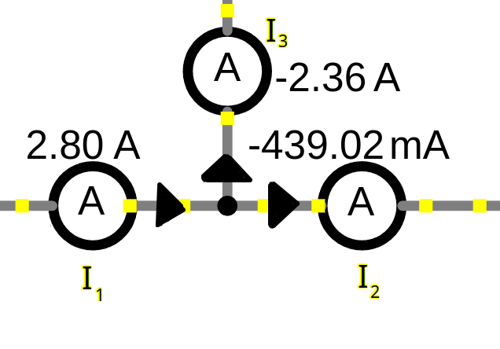
Для узла с токами , , :
-
Произвольно выберем соответвие направления токов и знаки. По умолчанию выбирают, если ток входит в узел то он плюсуются, а токи и выходят то они минусуются:
Применение: Используется для анализа токов в электрических цепях, особенно в параллельных соединениях элементов.
2. Второй закон Кирхгофа (Закон напряжений)
Второй закон Кирхгофа (закон напряжений): Алгебраическая сумма (учитывает знаки) напряжений на всех пассивных элементах замкнутого контура равна нулю. Это означает, что при обходе любого замкнутого контура сумма падений напряжения равна сумме ЭДС.
Или другая формулировка, в любом контуре произвольной электрической цепи, алгебраическая сумма падений напряжений на всех пассивных элементах равна алгебраической сумме электродвижущих сил действующих в этом контуре.
Сумма напряжений, создаваемых источниками питания (батареи, генераторы и т. д.), будет равна сумме напряжений, которые "поглощаются" элементами (резисторами, конденсаторами, катушками и т. д.).
Это очень просто, если в цепи присутствует только один пассивный элемент то он забирает на себя все напряжение, если два пассивных элемента то они делят все напряжения в зависимости от количества Ом сопротивления.
Когда мы выбрали произвольно напрвление токов и направление контура, то при составлении уравнений мы учитываем эти направления. Так при сумировании источников напряжения мы минусуем тот направление которого не совпадает с направлением контура, а при сумировании падений напряжений мы смотрим на то соврадает ли ток с выбранным направление тока контура, если не совпадает тогда отнимаем его:
Суть: В любом замкнутом контуре сумма всех ЭДС (источников напряжения) равна сумме падений напряжения на всех элементах контура.
Количество уравнений которое необходимо составить по второму закону Кирхгофа, для независимых контуров, равно количеству ветвей без источника тока минус количество уравней по первому закону Кирхгофа
Если в контуре нет источника ЭДС то оно равно 0:
Контур — это замкнутый путь в электрической цепи.
Независимый контур - это контур электрической схемы, который включает в себя хотя бы одну ветвь, которой нет в предыдущих найденных контурах, и хотя бы одну ветвь, содержащуюся в предыдущих контурах.
Для расчета схемы выбирают контур так что бы в нем небыло источника тока (источник тока может быть внутри контура)
Применение: Используется для расчёта напряжений и токов в сложных цепях, включая последовательные соединения и многоконтурные схемы.
Пример 1:
Для замкнутого контура с источником напряжения , резисторами и током :
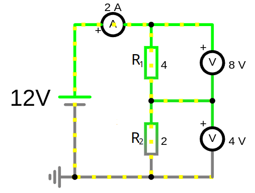
Представьте замкнутую цепь с источником напряжения и двумя резисторами:
Шаги:
-
По второму закону Кирхгофа:
Напряжение на каждом резисторе рассчитывается по закону Ома ():
-
Общий ток в цепи:
- Суммарное сопротивление последовательно соединеных резисторов:
-
Подставляем значения:
-
Проверяем закон Кирхгофа:
Пример 2:
Найти токи во всех участках цепи.

Цепь имеет два независимых контура и три разных тока ветви. Выберем произвольно направления обхода контуров (можно прикинуть относительно узла А, что сумма напряжений положительно направленых к нему будет больше чем встречное напряжение даже с учетом падений напряжения на резисторах) и узел в котором произвольно направления токов (но тоже учитывая логику направления контура можно предположить как будет протекать ток).
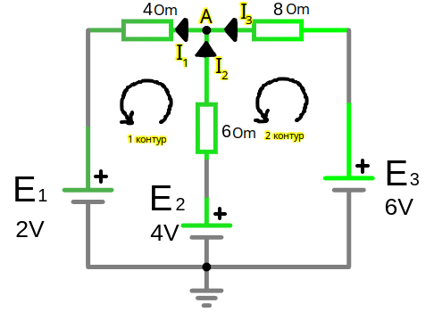
Для узла А имеем по первому закону Кирхгофа: или
где:
- - минусуем ток так как он выходит из узла А, а остальные токи плюсуем так как они входят в узел А.
Для 1-го контура по второму закону Кирхгофа:
где:
- - минусуем напряжение так как оно направленно на встречу заданому направлению обхода контура, а c положительным знаком так как его направление совпадает с контуром.
- Суммируя напряжение контура мы его преобразовали к виду , и так как токи ветвей и совпадают с направлением контура поэтому они с положительными знаками.
Для 2-го контура по второму закону Кирхгофа:
Итого имеем систему уравнений:
- (1)
- (2)
- (3)
Подставим значения:
- (1)
- (2)
- (3)
Упростим уравнения (2) и (3) поделив на два и выразим из уравнения (1) и подставим его. Сложим множители :
- (1)
- (2)
- (3)
Приведем коэфициенты для к одному значению, умножив уравнение (2) на 7, а уравнение (3) на 7:
- (1)
- (2)
- (3)
Сложим уравнения (2) и (3), чтобы исключить :
-
(1)
-
Выведем ток из любого предудущего уравнения подставив значение :
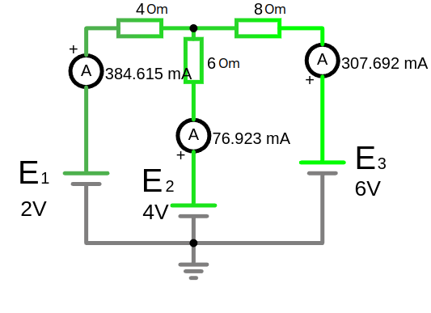
Схема из программы LTspice:
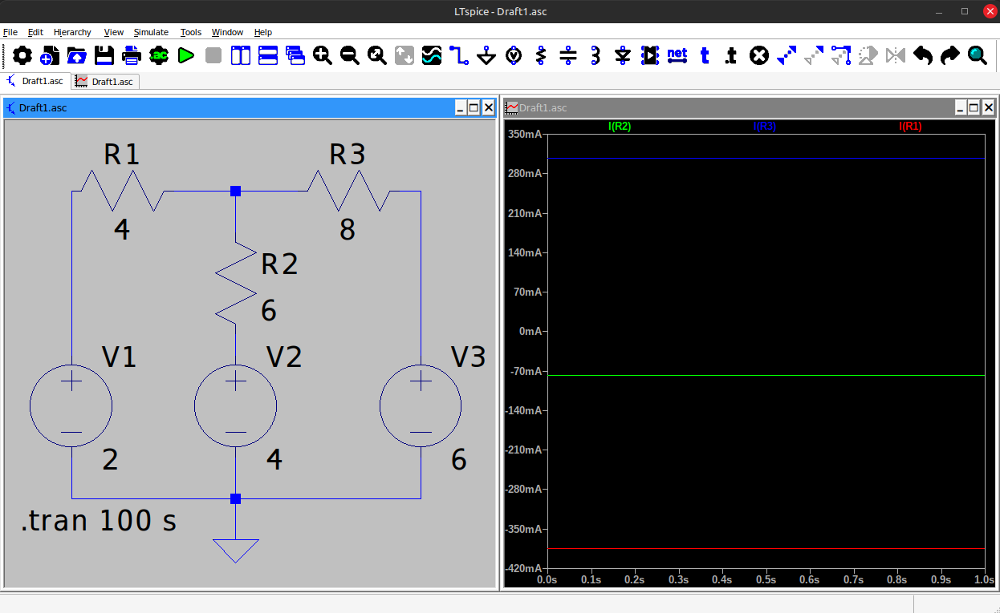
Преимущества законов Кирхгофа
- Позволяют анализировать как простые, так и сложные цепи.
- Основа для методов расчёта, таких как метод узловых потенциалов или метод контурных токов.
- Работают для любых типов элементов, включая резисторы, источники напряжения и тока.
Урок 8. Первый и второй законы Кирхгофа.
Законы Кирхгофа
Законы Кирхгофа описывают основные принципы поведения электрических цепей. Они позволяют рассчитывать токи, напряжения и сопротивления в сложных электрических схемах.
Зачем нужны законы Кирхгофа:
- Анализ электрических цепей: Эти законы позволяют нам составлять математические уравнения, описывающие поведение электрической цепи. Решая эти уравнения, мы можем найти значения токов и напряжений в любой точке цепи.
- Проектирование электрических схем: Законы Кирхгофа необходимы для проектирования новых электрических схем, таких как усилители, фильтры, генераторы и т.д. Они позволяют нам рассчитать значения элементов схемы, чтобы она работала так, как задумано.
- Понимание работы электронных устройств: Понимание законов Кирхгофа необходимо для того, чтобы разобраться в принципах работы различных электронных устройств, от простых лампочек до сложных компьютеров.
- Решение задач по электротехнике: В учебных заведениях и на практике часто приходится решать задачи, связанные с расчетом электрических цепей. Законы Кирхгофа являются основным инструментом для решения таких задач.
Какие задачи можно решать с помощью законов Кирхгофа:
- Расчет токов и напряжений в любой точке цепи: Зная значения сопротивлений и ЭДС источников питания, можно рассчитать силу тока в любой ветви цепи и напряжение на любом элементе.
- Определение эквивалентного сопротивления: Законы Кирхгофа позволяют найти эквивалентное сопротивление сложных электрических цепей.
- Анализ работы различных электронных схем: С помощью этих законов можно анализировать работу усилителей, фильтров, генераторов и других электронных устройств.
Алгоритм применения законов Кирхгофа
-
Обозначьте направления токов:
Предположите направление токов в ветвях цепи в каждом узле. Если итоговый результат конкретного тока получится отрицательным, реальное направление противоположно предположенному. -
Примените первый закон Кирхгофа к узлам:
Запишите уравнения для всех узлов (кроме одного, так как его уравнение будет зависимым от остальных). -
Найти все независимые контуры: Найдите все независимые контуры и произвольно выберите направление для их обхода. При обходе контура те токи которые не совпадают с направлением контура будут суммироваться с минусом.
-
Примените второй закон Кирхгофа к контурам:
Запишите уравнения для каждого контура, включая источники и падения напряжения на элементах. -
Решите систему уравнений:
Полученная система уравнений позволяет найти токи и напряжения.
1. Первый закон Кирхгофа (Закон токов)
Первый закон Кирхгофа (закон токов): Алгебраическая сумма (с учетом знака) токов, сходящихся в узле, равна нулю. Это означает, что в любой точке цепи количество заряда, втекающего в нее, равно количеству заряда, вытекающего из нее.
Суть: Сумма токов, входящих в узел, равна сумме токов, выходящих из него.
Количество токов в цепи определяет количество ветвей (В ветвях с источником тока уже известен ток).
Количество уравнений которое необходимо составить по первому закону Кирхгофа, равно количество узлов минус 1
где - это источник тока
Узел — это точка соединения двух или более проводников.
Пример:
Для узла с токами , , :
-
Произвольно выберем соответвие направления токов и знаки. По умолчанию выбирают, если ток входит в узел то он плюсуются, а токи и выходят то они минусуются:
Применение: Используется для анализа токов в электрических цепях, особенно в параллельных соединениях элементов.
2. Второй закон Кирхгофа (Закон напряжений)
Второй закон Кирхгофа (закон напряжений): Алгебраическая сумма (учитывает знаки) напряжений на всех пассивных элементах замкнутого контура равна нулю. Это означает, что при обходе любого замкнутого контура сумма падений напряжения равна сумме ЭДС.
Или другая формулировка, в любом контуре произвольной электрической цепи, алгебраическая сумма падений напряжений на всех пассивных элементах равна алгебраической сумме электродвижущих сил действующих в этом контуре.
Сумма напряжений, создаваемых источниками питания (батареи, генераторы и т. д.), будет равна сумме напряжений, которые "поглощаются" элементами (резисторами, конденсаторами, катушками и т. д.).
Это очень просто, если в цепи присутствует только один пассивный элемент то он забирает на себя все напряжение, если два пассивных элемента то они делят все напряжения в зависимости от количества Ом сопротивления.
Когда мы выбрали произвольно напрвление токов и направление контура, то при составлении уравнений мы учитываем эти направления. Так при сумировании источников напряжения мы минусуем тот направление которого не совпадает с направлением контура, а при сумировании падений напряжений мы смотрим на то соврадает ли ток с выбранным направление тока контура, если не совпадает тогда отнимаем его:
Суть: В любом замкнутом контуре сумма всех ЭДС (источников напряжения) равна сумме падений напряжения на всех элементах контура.
Количество уравнений которое необходимо составить по второму закону Кирхгофа, для независимых контуров, равно количеству ветвей без источника тока минус количество уравней по первому закону Кирхгофа
Если в контуре нет источника ЭДС то оно равно 0:
Контур — это замкнутый путь в электрической цепи.
Независимый контур - это контур электрической схемы, который включает в себя хотя бы одну ветвь, которой нет в предыдущих найденных контурах, и хотя бы одну ветвь, содержащуюся в предыдущих контурах.
Для расчета схемы выбирают контур так что бы в нем небыло источника тока (источник тока может быть внутри контура)
Применение: Используется для расчёта напряжений и токов в сложных цепях, включая последовательные соединения и многоконтурные схемы.
Пример 1:
Для замкнутого контура с источником напряжения , резисторами и током :
Представьте замкнутую цепь с источником напряжения и двумя резисторами:
Шаги:
-
По второму закону Кирхгофа:
Напряжение на каждом резисторе рассчитывается по закону Ома ():
-
Общий ток в цепи:
- Суммарное сопротивление последовательно соединеных резисторов:
-
Подставляем значения:
-
Проверяем закон Кирхгофа:
Пример 2:
Найти токи во всех участках цепи.
Цепь имеет два независимых контура и три разных тока ветви. Выберем произвольно направления обхода контуров (можно прикинуть относительно узла А, что сумма напряжений положительно направленых к нему будет больше чем встречное напряжение даже с учетом падений напряжения на резисторах) и узел в котором произвольно направления токов (но тоже учитывая логику направления контура можно предположить как будет протекать ток).
Для узла А имеем по первому закону Кирхгофа: или
где:
- - минусуем ток так как он выходит из узла А, а остальные токи плюсуем так как они входят в узел А.
Для 1-го контура по второму закону Кирхгофа:
где:
- - минусуем напряжение так как оно направленно на встречу заданому направлению обхода контура, а c положительным знаком так как его направление совпадает с контуром.
- Суммируя напряжение контура мы его преобразовали к виду , и так как токи ветвей и совпадают с направлением контура поэтому они с положительными знаками.
Для 2-го контура по второму закону Кирхгофа:
Итого имеем систему уравнений:
- (1)
- (2)
- (3)
Подставим значения:
- (1)
- (2)
- (3)
Упростим уравнения (2) и (3) поделив на два и выразим из уравнения (1) и подставим его. Сложим множители :
- (1)
- (2)
- (3)
Приведем коэфициенты для к одному значению, умножив уравнение (2) на 7, а уравнение (3) на 7:
- (1)
- (2)
- (3)
Сложим уравнения (2) и (3), чтобы исключить :
-
(1)
-
Выведем ток из любого предудущего уравнения подставив значение :
Схема из программы LTspice:
Преимущества законов Кирхгофа
- Позволяют анализировать как простые, так и сложные цепи.
- Основа для методов расчёта, таких как метод узловых потенциалов или метод контурных токов.
- Работают для любых типов элементов, включая резисторы, источники напряжения и тока.
Урок 18. Расчет электрических цепей методом законов Кирхгофа. Часть 1.
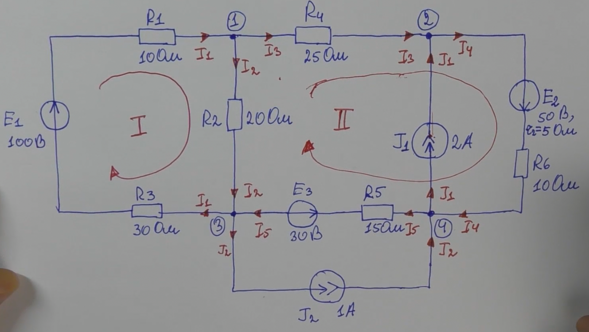
Для первого закона Кирхгофа
-
Количество токов в цепи определяет количество ветвей (В ветвях с источником тока уже известен ток).
-
Количество уравнений которое необходимо составить по первому закону Кирхгофа, равно количество узлов минус 1
Для второго закона Кирхгофа
- Количество уравнений которое необходимо составить по второму закону Кирхгофа, для независимых контуров, равно количеству ветвей без источника тока минус количество уравней по первому закону Кирхгофа
где:
- - число ветвей
- - число ветвей с источником тока
- - число узлов
Пример:
Для начала расчета необходимо выбрать направления токов в ветвях.
После можем составлять уравнения по первому закону Кирхгофа, количество их будет 3 для нашей схемы т.е.
Теперь можем определить необходимое количество уравнений по второму закону Кирхгофа:
Итого наша система уравнений будет состоять из уравнений.
Составим для любых 3-х узлов, уравнения по первому закону Кирхгофа:
- (узел 1)
- (узел 2)
- (узел 4)
Выберим произвольные направления независимых контуров для обхода, контуры выбираются без ветвей с источником тока!
- (контур 1)
- (контур 2)
Далее решаем систему уравнений различными методами, например методом подстановки, выражая одно неравенство через другое
Урок 19. Расчет электрических цепей методом законов Кирхгофа. Часть 2.
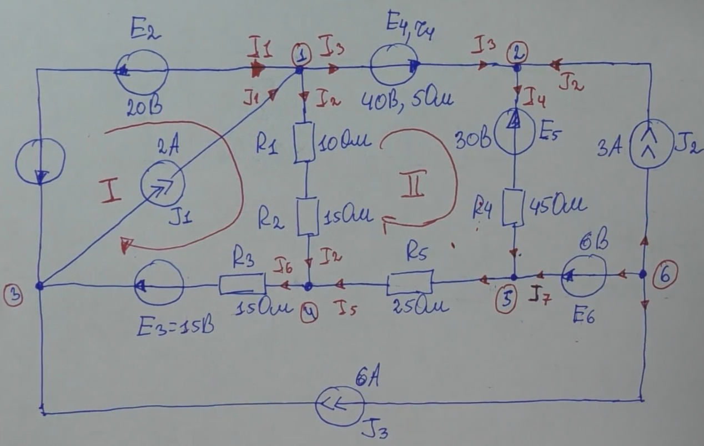
Для первого закона Кирхгофа
-
Количество токов в цепи определяет количество ветвей (В ветвях с источником тока уже известен ток).
-
Количество уравнений которое необходимо составить по первому закону Кирхгофа, равно количество узлов минус 1
Для второго закона Кирхгофа
- Количество уравнений которое необходимо составить по второму закону Кирхгофа, для независимых контуров, равно количеству ветвей без источника тока минус количество уравней по первому закону Кирхгофа
где: - - число ветвей - - число ветвей с источником тока - - число узлов
Пример:
Для начала расчета необходимо выбрать направления токов в ветвях.
После можем составлять уравнения по первому закону Кирхгофа, количество их будет 5 для нашей схемы т.е.
-
Теперь можем определить необходимое количество уравнений по второму закону Кирхгофа: -
Итого наша система уравнений будет состоять из уравнений.
Составим для любых 3-х узлов, уравнения по первому закону Кирхгофа:
- (узел 1)
- (узел 2)
- (узел 4)
- (узел 5)
- (узел 6)
Выберим произвольные направления независимых контуров для обхода, контуры выбираются без ветвей с источником тока!
- (контур 1)
- (контур 2)
Далее решаем систему уравнений различными методами, например методом подстановки, выражая одно неравенство через другое
Урок 9. Установившийся и переходной режимы электрических цепей.

Анализ и синтез электрических цепей: основные понятия и задачи
Анализ электрических цепей и синтез электрических цепей – это два взаимосвязанных процесса, которые лежат в основе проектирования и исследования электронных устройств.
Анализ электрических цепей
Анализ - это процесс определения характеристик электрической цепи при заданных параметрах ее элементов и внешних воздействиях. Другими словами, это ответ на вопрос: "Что будет, если...?"
Основные задачи анализа:
- Расчет токов и напряжений: Определение значений токов в ветвях и напряжений на элементах цепи.
- Определение частотных характеристик: Анализ поведения цепи при воздействии сигналов различной частоты.
- Определение переходных процессов: Исследование поведения цепи при изменении внешних условий (например, при включении источника питания).
- Определение устойчивости: Оценка способности цепи сохранять заданный режим работы при возмущениях.
Методы анализа:
- Законы Кирхгофа: Основные законы, позволяющие составить систему уравнений для анализа электрических цепей.
- Метод узловых потенциалов: Позволяет определять потенциалы узлов цепи.
- Метод контурных токов: Позволяет определять токи в контурах цепи.
- Матричный метод: Используется для анализа сложных электрических цепей.
- Компьютерное моделирование: С помощью специализированных программ (например, SPICE) можно моделировать поведение электрических цепей и проводить анализ.
Синтез электрических цепей
Синтез - это процесс создания электрической цепи с заданными характеристиками. Другими словами, это ответ на вопрос: "Как сделать так, чтобы?".
Основные задачи синтеза:
- Проектирование фильтров: Создание цепей, пропускающих сигналы определенных частот и задерживающих другие.
- Проектирование усилителей: Создание цепей, усиливающих электрические сигналы.
- Проектирование генераторов: Создание цепей, генерирующих электрические колебания.
- Проектирование источников питания: Создание цепей, преобразующих переменный ток в постоянный или стабилизирующих напряжение.
Методы синтеза:
- Аналитический метод: Основан на использовании математических методов для расчета параметров элементов цепи.
- Графический метод: Используется для визуального представления и анализа электрических цепей.
- Компьютерное моделирование: Позволяет быстро и эффективно моделировать различные варианты схем и выбирать оптимальный.
Связь между анализом и синтезом
Анализ и синтез электрических цепей тесно связаны между собой. При синтезе часто требуется выполнить анализ промежуточных схем для проверки их характеристик. А при анализе существующей схемы можно использовать полученные результаты для ее оптимизации или модификации.
Примеры задач:
- Анализ: Определить ток, протекающий через резистор в заданной цепи при известном напряжении источника.
- Синтез: Спроектировать фильтр нижних частот с заданной частотой среза.
Современные инструменты для анализа и синтеза:
- Специализированные программные пакеты: SPICE, MATLAB, Multisim и др.
- Языки программирования: Python, C++ с использованием соответствующих библиотек.
Заключение Анализ и синтез электрических цепей - это фундаментальные задачи электротехники. Понимание этих процессов позволяет инженерам проектировать и создавать разнообразные электронные устройства, от простых схем до сложных систем автоматики.
Установившийся режим
Установившийся режим электрической цепи – это состояние, при котором токи и напряжения в цепи не изменяются со временем. Это происходит после того, как все переходные процессы, вызванные изменением параметров цепи или включением/выключением источников питания, завершились.
Характеристики установившегося режима:
- Постоянство токов и напряжений: Значения токов и напряжений не изменяются с течением времени.
- Линейность: В большинстве случаев установившийся режим описывается линейными уравнениями.
- Простота анализа: Для анализа установившегося режима можно использовать законы Кирхгофа и Ома.
Пример: Если подключить резистор к источнику постоянного напряжения, то через некоторое время установится постоянный ток через резистор, и напряжение на нем будет равно напряжению источника.
Переходной режим
Переходной режим – это процесс перехода электрической цепи из одного установившегося состояния в другое. Он возникает при изменении параметров цепи (например, включении или выключении источника питания, изменении сопротивления) или при воздействии на цепь внешних сигналов.
Характеристики переходного режима:
- Изменение токов и напряжений: Токи и напряжения в цепи изменяются со временем.
- Нелинейность: В некоторых случаях переходные процессы описываются нелинейными уравнениями.
- Сложность анализа: Анализ переходных процессов требует использования более сложных математических методов, таких как дифференциальные уравнения.
Пример: При замыкании ключа в цепи с резистором и конденсатором, конденсатор начнет заряжаться, и ток в цепи будет постепенно уменьшаться. Этот процесс и будет переходным режимом.
Поведение конденсатора в установившемся режиме в цепи постоянного тока (обрыв )
Противодействует изменению напряжения. Если напряжение пытается измениться, конденсатор заряжается или разряжается, чтобы его стабилизировать. Накопление энергии происходит в виде электрического поля между его обкладками. В установившемся режиме ведёт себя как разрыв цепи (обрыв). Реакция на скачок напряжения вызывает скачок тока.
1. Включение конденсатора в цепь постоянного тока
- При подаче напряжения на конденсатор ток начинает протекать в цепи, но только до тех пор, пока конденсатор заряжается. Это происходит, потому что в начале зарядки разность потенциалов между обкладками конденсатора мала, и ток ограничивается только сопротивлением цепи.
- Постепенно, по мере зарядки, напряжение на обкладках конденсатора увеличивается, и ток уменьшается. Как только напряжение на конденсаторе достигает напряжения источника, ток в цепи прекращается, так как конденсатор становится эквивалентен разрыву цепи.
- Итог: После завершения зарядки конденсатор больше не пропускает ток в цепи постоянного тока (он ведёт себя как разомкнутая цепь).
2. Отключение конденсатора от источника
-
При отключении конденсатора от источника питания он сохраняет заряд на своих обкладках, то есть напряжение на его обкладках остаётся неизменным (в идеальном случае). Это связано с тем, что энергия, накопленная в электрическом поле, остаётся в конденсаторе:
где — ёмкость, — напряжение на обкладках.
-
Если цепь остаётся разомкнутой, ток через конденсатор не протекает, и напряжение на нём удерживается.
3. Разряд конденсатора
-
Если цепь замкнуть (например, подключив нагрузку), конденсатор начнёт разряжаться, "отдавая" накопленную энергию. При этом через нагрузку будет течь ток, а напряжение на конденсаторе будет постепенно уменьшаться.
-
Закон разряда конденсатора описывается экспоненциальной зависимостью:
где — сопротивление нагрузки, — ёмкость конденсатора.
Заряженная катушка индуктивности после размыкания цепи пытаясь поддерживать ток, повышает напряжение, а заряженный конденсатор при размыкании цепи пытаясь удержать напряжение, повышает ток, таким образом они способствуют протеканию тока после размыкания цепи.
В установившемся режиме в цепи постоянного тока (когда все переходные процессы завершились) конденсатор ведет себя следующим образом:
1. Конденсатор как разомкнутая цепь
- Конденсатор полностью заряжается до напряжения источника (если он подключен напрямую к нему через резистор).
- После завершения зарядки ток через конденсатор перестает течь, так как сопротивление (импеданс) конденсатора в постоянном токе становится бесконечно большим.
Физическая причина:
При постоянном напряжении ток через конденсатор течет только до тех пор, пока он заряжается. Как только напряжение на обкладках конденсатора достигает напряжения источника, ток прекращается, так как нет изменения напряжения (а ток в конденсаторе зависит от изменения напряжения: ).
2. Эквивалентная модель
- В установившемся режиме конденсатор можно заменить разрывом цепи (эквивалентом бесконечного сопротивления).
3. Энергия в конденсаторе
-
Конденсатор сохраняет накопленную энергию в электрическом поле между обкладками. Энергия определяется формулой:
(измеряется в джойлях Дж)
где — ёмкость конденсатора, — напряжение на его обкладках.
Пример: Если в цепи постоянного тока есть резистор и конденсатор , подключенные к источнику постоянного напряжения , то:
- Сначала ток будет уменьшаться экспоненциально при зарядке конденсатора.
- После завершения зарядки ток в цепи станет равен нулю, и напряжение на конденсаторе будет равно напряжению источника.
Итог: Конденсатор в установившемся режиме в цепи постоянного тока ведет себя как разрыв цепи.
Пояснение:
Исходная цепь и как цепь будет выглядеть в установившемся режиме в котором конденсаторы равносильны обрыву цепи. Ток в ветви с конденсатором и равен 0, поэтому остается только путь через ветвь с резистором

Когда конденсатор полностью заряжен то ток через него перестает протекать, поэтому конденсатор в таких цепях представляют как разрыв цепи и ток в ветки с конденсатором и сопротивление ветви с конденсатором
Когда цепь замыкается то конденсатор заряжается т.е. ток протекает и когда цепь размыкается конденсатор разряжается т.е. ток тоже протекает, но это переходные режимы, а в устоявшемся режиме ток

-
для отрезка [0A], ток в конденсаторе т.е. растет с этой скоростью до момента полного заряда конденсатора
-
для отрезка [AB] когда конденсатор зярядился,т.е. для устоявшегося режима, потому что , т.е. напряжение не изменилось за время и соответсвенно ток нулевой на этом отрезке это равносльно разрыву цепи
-
отрезок [BC] характерен в моменты включения/выключения или замыкания/размыкания цепи, показывает зависимость времени от тока, чем больше изменится напряжение за единицу времени тем больше ток будет протекать через конденсатор
Когда в электрической цепи есть несколько заряженных конденсаторов и резисторы, подключенные между ними, то при замыкании цепи произойдет процесс перераспределения зарядов. Этот процесс будет продолжаться до тех пор, пока не установится равновесное состояние, то есть пока напряжения на всех конденсаторах не сравняются они будут передавать заряд на более низкий потенциал другого конденсатора то есть конденсатор с более низким потенциалом будет еще и заряжаться.
Поведение индуктивного элемента в установившемся режиме в цепи постоянного тока (короткое замыкание - идеальный проводник перемычка и )
Индуктивность - это свойство электрической цепи противостоять изменению силы тока. Свойства индуктивности противоположны конденсатору т.е. противодействует изменению тока и в устоявшемся режиме ведет себя как идеальный проводник (замыкает цепь), в то время как конденсатор наоборот разрывает цепь. И реакция на скачок тока вызывает скачок напряжения, в то время как конденсатор наоборот вызывает скачок тока.
Накопление энергии происходит в виде магнитного поля, создаваемого протекающим током.
Включение катушки в цепь постоянного тока:
- При подаче напряжения на катушку ток возрастает не мгновенно, а постепенно, поскольку ЭДС самоиндукции противодействует изменению тока. При увеличении тока создает напряжение, направленное против внешнего источника, чтобы замедлить рост тока. Это может привести к тому, что напряжение на линии временно снизится (из-за противодействия катушки)
Отключение катушки от источника:
- При размыкании цепи ток не прекращается мгновенно из-за ЭДС самоиндукции. Энергия, накопленная в магнитном поле катушки, не может исчезнуть мгновенно. Если в цепи нет пути для протекания тока (например, нет шунтирующего диода), напряжение на катушке будет расти до тех пор, пока не произойдёт пробой изоляции или не возникнет искра (высоковольтного импульса) в месте размыкания. При уменьшении тока создает напряжение, которое пытается поддерживать текущий ток. Когда вы отключаете цепь с катушкой, ток через неё резко уменьшается. Катушка, пытаясь поддержать ток, создает высоковольтный импульс напряжения. Этот импульс может быть очень сильным, вплоть до пробоя изоляции или образования искры на разомкнутых контактах. Таким образом, ток продолжает течь до тех пор, пока магнитное поле полностью не разрушится, и энергия не рассеется.
Это может вызвать временное увеличение напряжения на линии, поскольку катушка "выдаёт" накопленную энергию из своего магнитного поля.
В установившемся режиме постоянного тока индуктивность ведет себя как короткое замыкание.
Почему так происходит?
- ЭДС самоиндукции: При изменении силы тока в катушке возникает ЭДС самоиндукции, которая препятствует этому изменению. В установившемся режиме ток постоянен, следовательно, ЭДС самоиндукции равна нулю. ЭДС самоиндукции — это электрическое напряжение, возникающее в катушке (или любом проводнике с индуктивностью) в результате изменения силы тока, протекающего через нее. Это явление описывается законом электромагнитной индукции Фарадея. Когда ток через катушку изменяется, меняется магнитное поле, которое она создает. Изменение магнитного поля, в свою очередь, вызывает индуцирование напряжения в той же катушке (или проводнике), которое препятствует изменению тока. Это напряжение называется ЭДС самоиндукции.
- Сопротивление постоянному току: Идеальная катушка индуктивности не имеет активного сопротивления. Поэтому в установившемся режиме постоянного тока на ней не происходит падение напряжения.
1. Индуктивность как проводник (идеальный провод)
-
В установившемся режиме в цепи постоянного тока через индуктивность течет постоянный ток.
-
При постоянном токе напряжение на индуктивности становится равным нулю. Это связано с тем, что напряжение на катушке индуктивности определяется законом:
где — индуктивность, — скорость изменения тока.
Если ток не изменяется (постоянный ток), то , а .
Физическая причина:
Индуктивный элемент препятствует изменениям тока, но не оказывает сопротивления постоянному току.
2. Эквивалентная модель
- В установившемся режиме катушка индуктивности в цепи постоянного тока заменяется идеальным проводником (нулевым сопротивлением).
3. Энергия в индуктивности
-
Индуктивность накапливает энергию в виде магнитного поля. Энергия определяется формулой:
где — индуктивность катушки, — ток через нее.
Пример:
Если в цепи постоянного тока есть резистор , индуктивность , подключенные к источнику постоянного напряжения , то:
- Сначала ток будет возрастать экспоненциально при заряде магнитного поля катушки.
- После завершения переходных процессов ток станет постоянным, а напряжение на индуктивности будет нулевым.
Итог: В установившемся режиме в цепи постоянного тока индуктивность ведет себя как идеальный проводник (обеспечивает беспрепятственный ток).
Практическое применение:
- Защита цепей от бросков тока: Индуктивности часто используются для защиты цепей от резких изменений тока, например, при включении или выключении питания.
- Фильтры: Индуктивности используются в фильтрах для подавления высокочастотных помех.
- Трансформаторы: В трансформаторах индуктивности используются для передачи энергии от одной цепи к другой.
Важные замечания:
- Идеальная индуктивность: В реальных катушках всегда присутствует некоторое активное сопротивление обмотки. Поэтому в реальных цепях падение напряжения на индуктивности в установившемся режиме будет небольшим, но не равным нулю.
- Переходные процессы: При включении или выключении источника питания в цепи с индуктивностью возникают переходные процессы. В этот период напряжение на индуктивности может достигать значительных значений.
Вывод: В установившемся режиме постоянного тока индуктивность ведет себя как короткое замыкание. Это важное свойство, которое необходимо учитывать при анализе и проектировании электрических цепей.
Пояснение:
Исходная цепь и как цепь будет выглядеть в установившемся режиме в котором индуктивные элементы равносильны проводу. Ток пойдет по пути наименьшего сопротивления т.е. по заряженной индуктивности которая превратилась в идеальный проводник с

В установившемся режиме на катушке индуктивности и и

-
для отрезка [0A], это переходной период, при изменении силы тока в катушке возникает ЭДС самоиндукции, стабилизируя ток через понижение напряжения т.е. наряжение есть, в переходной период поддержания индуктивностью ЭДС самоиндукции
-
для отрезка [AВ], это установившейся режим т.е. ток не измениля, поэтому и напряжение на индуктивности
-
отрезок [BC] характерен в моменты включения/выключения или замыкания/размыкания цепи, т.е. произошел резкий скачок напряжения. При одном и том же токе на индуктивности, чем меньше будет временная составляющая тем больше скачок напряжения! В идеале найти такое время переходного этапа, особенно при выключении/размыкании цепи, что бы не пробить изоляцию высоковольтным импульсом напряжения и не повредились компоненты схемы. Поэтому катушка реле (что является индуктивностью) при размыкании мы ее шунтируем диодом, что бы замедлить снижение тока. Диод (его ещё называют демпфирующим или обратным диодом), шунтирующий катушку индуктивности, помогает гасить скачок напряжения благодаря своему свойству проводить ток в одном направлении, что позволяет перенаправить ток через катушку безопасным образом, избегая повреждения цепи. Диод включается параллельно катушке, обычно в обратной полярности относительно источника питания (анод к минусу катушки, катод к плюсу). Если напряжение становится отрицательным относительно катушки (с учётом полярности), оно превышает пороговое прямое напряжение диода и диод открывается. Диод образует путь для тока, ток, который раньше шёл через нагрузку, теперь замыкается через диод и катушку по замкнутому контуру. Энергия, запасённая в магнитном поле катушки, рассеивается на сопротивлении диода и катушки.
Идеальный Амперметр имеет
Идеальный Вольтметр имеет
Индуктивность может "заряжаться" (то есть накапливать энергию в своём магнитном поле) за счёт другой индуктивности или конденсатора. Это происходит через процессы электромагнитной индукции и обмена энергией между элементами цепи. Давайте разберём подробно:
1. Зарядка катушки индуктивности от другой катушки (индуктивная связь):
- Если две катушки размещены рядом, их магнитные поля могут взаимодействовать (взаимоиндукция).
- Когда ток изменяется в первой катушке (первичная катушка), он создаёт переменное магнитное поле, которое индуцирует ЭДС во второй катушке (вторичная катушка).
- Это явление используется, например, в трансформаторах, где энергия передаётся между обмотками.
где:
- — взаимная индуктивность катушек,
- — скорость изменения тока в первичной катушке.
Таким образом, катушка может "заряжаться" энергией, передаваемой от другой катушки через магнитное поле.
2. Зарядка катушки от конденсатора:
- Конденсатор может передавать энергию катушке за счёт процесса резонанса.
- В цепи с катушкой () и конденсатором () энергия циклически передаётся между электрическим полем конденсатора и магнитным полем катушки. Это называется колебательным контуром.
где:
- — энергия, накопленная в электрическом поле конденсатора,
- — энергия, накопленная в магнитном поле катушки.
Когда конденсатор разряжается, его энергия переходит в магнитное поле катушки. Затем магнитное поле катушки начинает разрушаться, и энергия возвращается обратно в конденсатор, но с противоположной полярностью. Это создаёт колебания.
Пример — LC-колебательный контур:
- Начало: Конденсатор заряжен, катушка "пустая".
- Передача энергии: Конденсатор разряжается через катушку, создавая в ней ток. Это ток накапливает энергию в магнитном поле катушки.
- Максимум энергии катушки: Конденсатор полностью разряжен, вся энергия теперь в магнитном поле катушки.
- Обратная передача: Магнитное поле катушки рушится, создавая ток, который заряжает конденсатор снова, но с обратной полярностью.
Итог:
- Катушка от катушки: Через взаимную индукцию.
- Катушка от конденсатора: Через передачу энергии в колебательном контуре.
Катушки и конденсаторы могут эффективно обмениваться энергией, что активно используется в радиотехнике, резонансных цепях и трансформаторах.
Для проверки того, как конденсатор отдает энергию после отключения источника
Выбор компонентов:
- Конденсатор: Подберите ёмкость от 100 μФ до 1000 μФ, чтобы он мог накопить достаточную энергию.
- Резистор: Обычно 330 Ом для светодиодов.
- Источник: 5–12 В (в зависимости от напряжения светодиода).
Отключите источник питания, когда ток на конденсаторе равен 0, А т.е. конденсатор зарядил свое электрическое поле отдавая накопленное напряжение. Если конденсатор был заряжен, он начнёт разряжаться через светодиод, и светодиод будет светиться до тех пор, пока конденсатор не разрядится.

Конденсатор: После отключения источника напряжения конденсатор начинает разряжаться, отдавая накопленную энергию в цепь. Светодиод будет светиться, пока напряжение на конденсаторе не упадёт ниже порога включения светодиода, в нашем случае при радении напряжения на светодиоде ниже 1.4, В.
Для катушки не забывайте про шунтирующий диод — он предотвращает повреждение компонентов из-за высоковольтного импульса.
Накопленная энергия конденсатора за время установившегося режима:
-
т.е. мы микрофарады привели к фарадам формы международной единицы СИ
-
Таким образом, конденсатор емкостью 100 кФ, заряженный до напряжения 9 вольт, накопит энергию в 0.0081 джоуля.
Для проверки того, как индуктивность отдает энергию после отключения источника

- На рис. 1: индуктивность еще не зарядила свое магнитное поле, поэтому еще не идеальный проводник поэтому обладает сопротивлением и понижает напряжение ветви препятствуя свечению светодиода
- На рис. 2: индуктивность уже в установившемся режиме обладает свойством идеального проводника, пропускает все напряжение источника на светодиод и он светится
- На рис. 3: цепь разомкнута, индуктивность в переходном режиме, отдает накопленную энергию пропуская заряд через открывшийся диод 1N4148
- На рис. 4: индуктивность разрядилась и не может поддерживать достаточное напряжение на светодиоде для его свечения
Шунтирующий диод 1N4148 не подключается последовательно с катушкой, он подключается параллельно катушке, но с обратной полярностью. Это позволяет диоду "срабатывать" только тогда, когда катушка создаёт ЭДС самоиндукции, направленную противоположно предыдущему напряжению источника питания.
- Анод (положительный вывод) шунтирующего диода подключается к минусу индуктивности.
- Катод (отмечен полоской) подключается к плюсу индуктивности.
Когда источник питания включён, ток проходит через катушку и светодиод (если он последовательно). Диод 1N4148 при этом заперт, так как его обратное смещение препятствует прохождению тока. (При наличии источника питания, диод заперт, потому что его анод находится на более низком потенциале (минус катушки), чем катод (плюс катушки).)
При отключении источника питания ток через катушку резко уменьшается, и катушка создаёт ЭДС самоиндукции, которая "подталкивает" ток в ту же сторону, в которой он тек до отключения. В этот момент диод открывается, предоставляя токам путь и защищая другие компоненты от высокого напряжения.
- ЭДС самоиндукции катушки пытается поддерживать ток в цепи, создавая напряжение противоположной полярности.
- В этот момент анод диода оказывается на более высоком потенциале, чем катод, и диод открывается.
- Ток замыкается через шунтирующий диод, позволяя энергии катушки безопасно рассеяться.
Урок 10. Последовательное и параллельное соединение резисторов.
Последовательное соединение резисторов (общий ток)

Схема замещения последовательного соединение резисторов как
где, т.е.
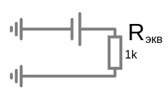
Характеристики:
-
Общее сопротивление: При последовательном соединении резисторов общее сопротивление суммируется:
где — сопротивления отдельных резисторов.
-
Ток в цепи: Во всех резисторах протекает одинаковый ток:
где — общее напряжение на цепи.
-
Напряжение на каждом резисторе: Напряжение делится между резисторами пропорционально их сопротивлениям:
— напряжение на -м резисторе.
Пример:
Если три резистора , , соединены последовательно, общее сопротивление будет:
Параллельное соединение резисторов (общее наряжение)
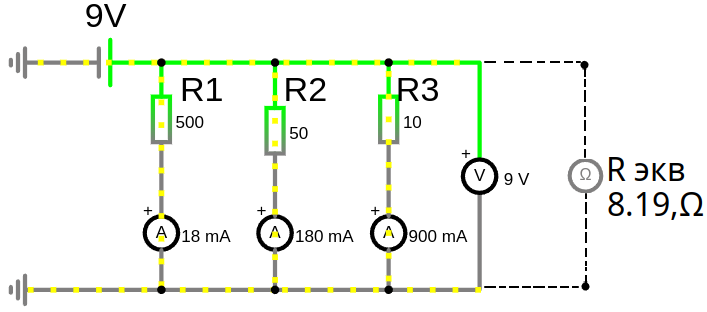
На схеме ниже, резистор параллельно соединен с двумя резисторами и

Характеристики:
-
Общее сопротивление: При параллельном соединении обратное общее (эквивалентное) сопротивление равно сумме обратных сопротивлений всех резисторов:
или:
Для упрощения расчетов используют проводимость
-
Напряжение: Напряжение на каждом резисторе одинаково:
-
Ток: Ток делится между резисторами обратно пропорционально их сопротивлениям:
где — ток через -й резистор.
Пример:
Если три резистора , , соединены параллельно:
-
-
-
-
-
или
Сравнение:
| Свойство | Последовательное соединение | Параллельное соединение |
|---|---|---|
| Сопротивление | Суммируется | Обратные сопротивления суммируются |
| Ток | Одинаков для всех резисторов | Делится между резисторами |
| Напряжение | Делится между резисторами | Одинаково на всех резисторах |
| Применение | Ограничение тока | Снижение общего сопротивления |
Урок 11. Смешанное соединение резисторов. Расчет схемы с одним источником ЭДС. Часть 1.
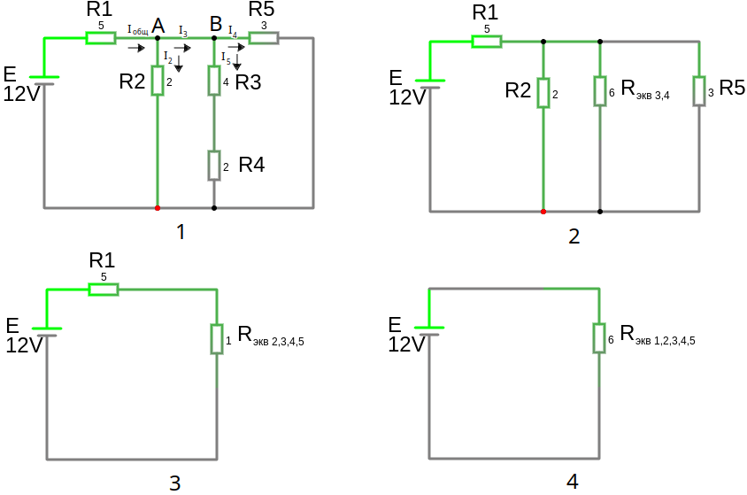
Методика расчёта смешанных цепей с одним источником ЭДС включает упрощение схемы путём последовательного или параллельного соединения резисторов в эквивалентные (свертка).
рис 2. резисторы и соединены последовательно, поэтому их сопротивления мы складываем
рис 3. резисторы , и соединены параллельно, поэтому складываем их сопротивления по формуле:
рис 4. резисторы и соединены последовательно, поэтому их сопротивления мы складываем и получаем конечное сопротивление цепи:
Общий ток:
Теперь необходимо посчитать токи и напряжение на каждом элементе, сворачивая схему:
- посчитаем напряжение для через него проходит общий ток:
- посчитаем напряжение для , по второму закону Кирхгофа (сумма падений напряжений на каждом элементе равна напряжению источника) т.е. напряжение на , и так как при параллельном соединение резисторов у них общее наряжение.
- посчитаем ток в ветки для :
- посчитаем токи для узла "А": входит в узел, и выходят из узла. По первому закону Кирхгофа для узла "А":
- посчитаем токи для узла "B": ток
- тогда по первому закону Кирхгофа для узла "B":
- либо найдем ток с помощью закона Ома для этой ветви:
- осталось найти личные напряжения на :
- для
- для либо через второй закон Кирхгофа
Урок 11. Смешанное соединение резисторов. Расчет схемы с одним источником ЭДС. Часть 1.
Методика расчёта смешанных цепей с одним источником ЭДС включает упрощение схемы путём последовательного или параллельного соединения резисторов в эквивалентные (свертка).
рис 2. резисторы и соединены последовательно, поэтому их сопротивления мы складываем
рис 3. резисторы , и соединены параллельно, поэтому складываем их сопротивления по формуле:
рис 4. резисторы и соединены последовательно, поэтому их сопротивления мы складываем и получаем конечное сопротивление цепи:
Общий ток:
Теперь необходимо посчитать токи и напряжение на каждом элементе, сворачивая схему:
- посчитаем напряжение для через него проходит общий ток:
- посчитаем напряжение для , по второму закону Кирхгофа (сумма падений напряжений на каждом элементе равна напряжению источника) т.е. напряжение на , и так как при параллельном соединение резисторов у них общее наряжение.
- посчитаем ток в ветки для :
- посчитаем токи для узла "А": входит в узел, и выходят из узла. По первому закону Кирхгофа для узла "А":
- посчитаем токи для узла "B": ток
- тогда по первому закону Кирхгофа для узла "B":
- либо найдем ток с помощью закона Ома для этой ветви:
- осталось найти личные напряжения на :
- для
- для либо через второй закон Кирхгофа
Урок 12. Смешанное соединение резисторов. Расчет схемы с одним источником ЭДС. Часть 2.
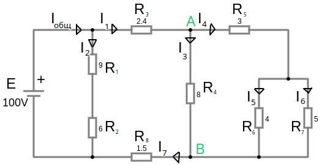
Резисторы и соединены параллельно, поэтому складываем их сопротивления по формуле:
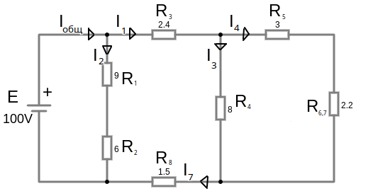
Резисторы и соединены последовательно, поэтому складываем их сопротивления по формуле:
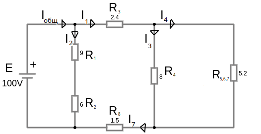
Резисторы и соединены параллельно, поэтому складываем их сопротивления по формуле:
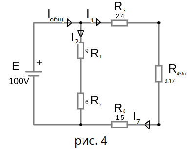
Резисторы и и соединены последовательно, поэтому складываем их сопротивления по формуле:
Резисторы и соединены последовательно, поэтому складываем их сопротивления по формуле:
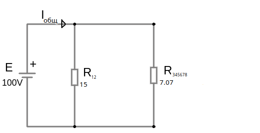
Резисторы и соединены параллельно, поэтому складываем их сопротивления по формуле:
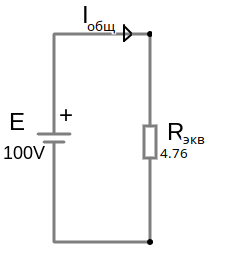
Общий ток:
Теперь необходимо посчитать ток и напряжение на каждом элементе, сворачивая схему:
Найдем ток по первому закону Кирхгофа:
Найдем напряжение на резисторах и :
-
- либо с помощью второго закона Кирхгофа
Найдем напряжение на резисторе :
По схеме на рисунке 4 видно, что ток это тот же ток что и :
Напряжение на ветви между узлами можно найти с помощью второго закона Кирхгофа, на схеме рисунка 4 мы уже знаем все напряжения пассивных компонентов следовательно между узлами будет все оставшееся напряжение:
- (я думаю это эквивалентное напряжение всех осташихся резисторов)
так как резисторы соединены парралельно и по второму закону Кирхгофа, сумма падений напряжений в замкнутом контуре равна сумме электродвижущих сил действующих в этом контуре:
Урок 13. Преобразование треугольника сопротивлений в звезду сопротивлений и обратно.
Преобразование треугольника сопротивлений в звезду сопротивлений (или наоборот) используется в электротехнике для упрощения анализа электрических цепей. Это преобразование позволяет заменить соединение резисторов, образующих треугольник (Δ), на эквивалентное соединение в виде звезды (Y), или наоборот.
При наличии в контуре источника ЭДС данное преобразование неполучится!
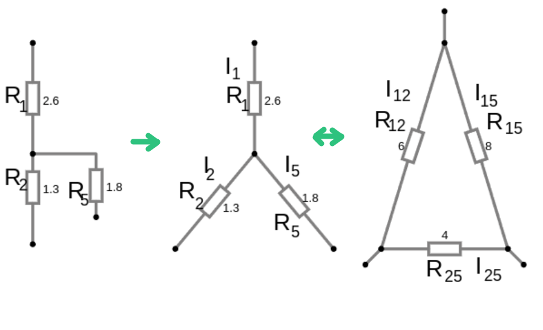
Формулы для преобразования звезды в треугольник
Формулы для преобразования треугольника в звезду
Урок 13. Преобразование треугольника сопротивлений в звезду сопротивлений и обратно.
Преобразование треугольника сопротивлений в звезду сопротивлений (или наоборот) используется в электротехнике для упрощения анализа электрических цепей. Это преобразование позволяет заменить соединение резисторов, образующих треугольник (Δ), на эквивалентное соединение в виде звезды (Y), или наоборот.
При наличии в контуре источника ЭДС данное преобразование неполучится!
Формулы для преобразования звезды в треугольник
Формулы для преобразования треугольника в звезду
Урок 15. Расчет электрических цепей со звездой и треугольником сопротивлений.

Так как мы не можем упростить схему с помощью метода сворачивания то воспользуемся упрощением схемы методом треугольник сопротивлений в звезду или наоборот.
Начнем упрощение схемы с преобразования звезды сопротивлений в треугольник сопротивлений:

Сопротивления и соединены параллельно, так же как и и , поэтому складываем их сопротивления как мы делали методом сворачивания, по формуле:

На данном этапе у нас имеется множество вариантов упрощения:
- звезда:
- треугольник:
- треугольник:
Упростим схему через преобразование звезды сопротивлений в треугольник:

Сопротивления соединены параллельно, так же как и и , поэтому складываем их сопротивления как мы делали методом сворачивания, по формуле:
Теперь у нас имеется два варианта для упрощения схемы:
- звезда:
- треугольник:
Упростим используя преобразование треугольник в звезду:


Сопротивления соединены последовательно, поэтому складываем их сопротивления как мы делали методом сворачивания, упростим их:
Сопротивления соединены параллельно, поэтому складываем их сопротивления как мы делали методом сворачивания, по формуле:
А оставшиеся сопротивления соединены последовательно, поэтому складываем их сопротивления:
На схемах все время присутствовал омметр, показывающий что каждый наш шаг упрощения был верен!
Далее можно расчитать токи ветвей и напряжения на элементах с помощью законов Кирхгофа
Урок 16. Преобразование нескольких параллельных ветвей с источниками питания в одну эквивалентную ветвь.

Для того что бы найти обший ток и напряжения на и следует упростить схему, параллельные ветви объединим в одну эквивалентную
-
Эквивалентное сопротивление:
где:
- — проводимость каждой ветви.
- — проводимость ветви c наличием внутреннего сопротивления у источника ЭДС.
-
Эквивалентная ЭДС: (алгебраическая сумма и следует выбрать предполагаемое направление результирующего ЭДС. Учитываются ветви только с источниками напряжения или тока)
Пример:
предположим направление результирующего ЭДС вниз:
- где: и отнимаем так как не совпадает с выбранным нами направлением
означает что мы ошиблись с выбором направления и на самом деле напряжение пойдет вверх
Посчитаем общий ток по закону Ома:
-
- где: минусуем так как оно идет на всречу
Посчитаем напряжение на сопротивлениях и :
-
-
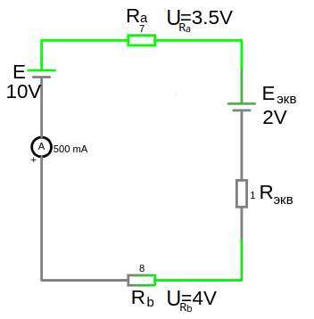
Пример 2:
Упростить схему и найти общий ток и напряжения на и
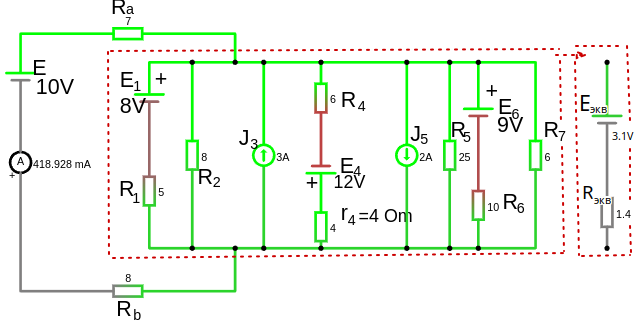
-
Посчитаем проводимости параллельно соединенных ветвей:
-
Посчитаем эквивалентное сопротивление:
-
Посчитаем эквивалентное напряжение, предположим направление напряжения в итоговой ветви от точки :
-
Посчитаем общий ток по закону Ома:
- Посчитаем напряжение на сопротивлениях и :
Вообщем остается непонятный момент, если увеличить составляющую тока или сопротивления в ветке источника тока то расчеты не сходятся.
Урок 17. Преобразование идеального источника ЭДС в источник тока и источника тока в источник ЭДС.
Преобразование работает только для реального (т.е. с внутренним сопротивлением) источника ЭДС или тока! Допускается преобразование идеального источника ЭДС только если с ним в ветви последовательно соединен резистор.

Для реального источника ЭДС:
Для реального источника тока:
Преобразование реального источника ЭДС в реального источник тока по формулам:
Преобразование реального источника тока в реальный источник ЭДС по формулам:
Пример:
Преобразуем реальный источник ЭДС () в реальный источник тока:
Преобразуем реальный источник тока () в реальный источник ЭДС:
Урок 20. Метод узловых потенциалов. Часть 1-3.
Метод узловых потенциалов
Метод узловых потенциалов — это аналитический метод расчёта электрических цепей, основанный на правиле Кирхгофа для токов (I-ое правило Кирхгофа). Этот метод позволяет определить напряжения в узлах схемы, а затем вычислить токи и другие параметры.
Основная идея метода
-
Выбираем опорный узел (обычно узел с землёй, его потенциал принимается за 0 В).
-
Обозначаем узловые потенциалы для всех оставшихся узлов.
-
Записываем уравнения по первому закону Кирхгофа (сумма токов, входящих в узел, равна сумме токов, выходящих из узла).
-
Выражаем токи через напряжения и проводимости:
где — проводимость.
-
Решаем систему уравнений относительно неизвестных узловых потенциалов.
-
Определяем токи и напряжения на элементах схемы.
Как выбрать опорный узел в методе узловых потенциалов?
Опорный узел — это узел, потенциал которого принимают за ноль вольт (0 В). Остальные узловые потенциалы выражаются относительно него.
Заземленный ными узел т.е. приравненный потенциал узла к нулю, ни как не повлияет на ток ветви, так как ток зависит от разности потенциалов напряжения узлов, а не их абсолютных значений. Поэтому разница потенциалов останется прежней потому что после выбора узла для заземления его потенциал отнимается от других зависимых узлов.
-
Выбирайте узел, к которому подключено больше всего элементов.
- Это уменьшает количество уравнений и упрощает расчёты.
- Например, если узел соединяет 3 и более элементов — это хороший кандидат.
-
Если есть источник напряжения, один из его выводов часто удобно сделать опорным.
- Если источник напряжения подключён между узлом и землёй, этот узел обычно выбирают опорным.
- Это исключает напряжение источника из системы уравнений.
-
Выбирайте узел, к которому подключена "земля" схемы.
- В реальных схемах часто уже есть выделенный узел, соединённый с общим проводом (GND).
- Это естественный выбор опорного узла, так как на практике все напряжения измеряются относительно земли.
-
Выбирайте узел, к которому подключено наименьшее количество независимых источников тока.
- Это уменьшает сложность записи уравнений.
Пример применения метода
Рассмотрим простую схему:

Для схемы где присутвует идеальный источник ЭДС (т.е. без внутреннего сопротивления) и без сопротивления в ветви, перед расчетом необхомимо модифицировать схему.
Выберем 4 узел как опорный (если его еще нет) и составим уравнения для оставшихся узлов по первому правилу Кирхгофа
🔹 Шаги решения:
- Составим уравнения по первому правилу Кирхгофа (для удобства расчетов примем приходящие токи в узел со знаком минус, а выходящие токи из узла со знаком плюс):
- (узел 1)
- (узел 2)
- (узел 3)
-
Записываем токи ветвей через узловые потенциалы, используем обобщенный закон Ома:
-
Так как 4-й узел заземлян то его потенциал нулевой
-
Для тока , направление тока (мы знаем что, ток протекает от большего потенциала к меньшему), следовательно потенциал и напряжение будет называеться
где
-
Для тока , направление тока то для него напряжение уже называется
где
-
Для тока , напряжение называется
где
-
Для тока , напряжение называется
где
-
Для тока , напряжение называется
где
-
-
Составим систему уравнений. Подставляем значения и в уравнения составленные по первому закону Кирхгофа для узлов (1,2,3), и решаем систему уравнений.
По итогу получим такие уравнения:
Эти уравнения можно получить используя универсальный способ вывода уравнений!
Урок 20. Метод узловых потенциалов. Часть 1-3.
Метод узловых потенциалов
Метод узловых потенциалов — это аналитический метод расчёта электрических цепей, основанный на правиле Кирхгофа для токов (I-ое правило Кирхгофа). Этот метод позволяет определить напряжения в узлах схемы, а затем вычислить токи и другие параметры.
Основная идея метода
-
Выбираем опорный узел (обычно узел с землёй, его потенциал принимается за 0 В).
-
Обозначаем узловые потенциалы для всех оставшихся узлов.
-
Записываем уравнения по первому закону Кирхгофа (сумма токов, входящих в узел, равна сумме токов, выходящих из узла).
-
Выражаем токи через напряжения и проводимости:
где — проводимость.
-
Решаем систему уравнений относительно неизвестных узловых потенциалов.
-
Определяем токи и напряжения на элементах схемы.
Как выбрать опорный узел в методе узловых потенциалов?
Опорный узел — это узел, потенциал которого принимают за ноль вольт (0 В). Остальные узловые потенциалы выражаются относительно него.
Заземленный ными узел т.е. приравненный потенциал узла к нулю, ни как не повлияет на ток ветви, так как ток зависит от разности потенциалов напряжения узлов, а не их абсолютных значений. Поэтому разница потенциалов останется прежней потому что после выбора узла для заземления его потенциал отнимается от других зависимых узлов.
-
Выбирайте узел, к которому подключено больше всего элементов.
- Это уменьшает количество уравнений и упрощает расчёты.
- Например, если узел соединяет 3 и более элементов — это хороший кандидат.
-
Если есть источник напряжения, один из его выводов часто удобно сделать опорным.
- Если источник напряжения подключён между узлом и землёй, этот узел обычно выбирают опорным.
- Это исключает напряжение источника из системы уравнений.
-
Выбирайте узел, к которому подключена "земля" схемы.
- В реальных схемах часто уже есть выделенный узел, соединённый с общим проводом (GND).
- Это естественный выбор опорного узла, так как на практике все напряжения измеряются относительно земли.
-
Выбирайте узел, к которому подключено наименьшее количество независимых источников тока.
- Это уменьшает сложность записи уравнений.
Пример применения метода
Рассмотрим простую схему:
Для схемы где присутвует идеальный источник ЭДС (т.е. без внутреннего сопротивления) и без сопротивления в ветви, перед расчетом необхомимо модифицировать схему.
Выберем 4 узел как опорный (если его еще нет) и составим уравнения для оставшихся узлов по первому правилу Кирхгофа
🔹 Шаги решения:
- Составим уравнения по первому правилу Кирхгофа (для удобства расчетов примем приходящие токи в узел со знаком минус, а выходящие токи из узла со знаком плюс):
- (узел 1)
- (узел 2)
- (узел 3)
-
Записываем токи ветвей через узловые потенциалы, используем обобщенный закон Ома:
-
Так как 4-й узел заземлян то его потенциал нулевой
-
Для тока , направление тока (мы знаем что, ток протекает от большего потенциала к меньшему), следовательно потенциал и напряжение будет называеться
где
-
Для тока , направление тока то для него напряжение уже называется
где
-
Для тока , напряжение называется
где
-
Для тока , напряжение называется
где
-
Для тока , напряжение называется
где
-
-
Составим систему уравнений. Подставляем значения и в уравнения составленные по первому закону Кирхгофа для узлов (1,2,3), и решаем систему уравнений.
По итогу получим такие уравнения:
Эти уравнения можно получить используя универсальный способ вывода уравнений!
Урок 22-23. Универсальный способ вывода уравнений.
Универсальные уравнения:
-
(первое уравнение)
-
(второе уравнение)
-
-
(n-1 уравнение)
последнее выражение имеет знак "+":
где:
-
- число узлов,
-
- общее число уравнений и общая длина слогаемых (т.е. для 7-ми узлов будет 6 уравнений по 6 слогаемых потенциалов в каждом)
-
- т.е. проводимости с одинаковыми индексами, наз. собственная узловая проводимость. Это арифметическая сумма (т.е. без учета знака) проводимостей всех ветвей присоединенных к соответствующему узлу, просто сложить все проводимости присоединенных ветвей к узлу n. Имеет знак "+"
Например, почему в первом выведенном уравнении
мы имеем такую запись "" ?
Потому что, это 1-й узел , этот узел имеет проводимости в ветвях такие как , а ветвь с источником тока без проводимости.
-
- т.е. проводимости с отличными индексами, наз. общая узловая проводимость. Это арифметическая сумма (т.е. без учета знака) проводимостей соединяющая указанные в индексе два узла. Если узлы не имеют соединения то и мы не пишем это в уравнение. Имеет знак "-"
Например, почему в первом выведенном уравнении
мы имеем такую запись "" ?
Потому что, это 1-й узел , который соеденен от 1-го узла до 2-го с единственной проводимостью .
И других ветвей нет между узлами, поэтому это единственное выражение.
Если ветвь не имеет сопротивления то проводимость равно 0 и выражение
-
если в ветви между узлами отсутвует проводимость то
-
это алгебраическая сумма (с учетом знака) узловых токов собственных узлов. Если источник ЭДС/тока направлен к узлу то он записывается со знаком "+", если источник ЭДС/тока направлен от узла то он записывается со знаком "-"
Пример, теперь выведем уравнения универсальным способом, для той же схемы.
Схема имеет 4-ри узла, следовательно уравнений будет .
И 4-й узел не рассматривается так как он заземлен.
- Для первого узла:
- (так как нет проводимости между узлами )
итого имеем:
- Для второго узла:
- (так как узел 2 имеет связь с 1-м и с 3-м узлом)
итого имеем:
так как узел 2 имеет связь с 1-м и с 3-м узлом т.е. три связи, поэтому в уравнении будет присутсвовать три выражения с потенциалом между этими узлами
- Для третьего узла:
- (так как нет проводимости между узлами )
итого имеем:
т.е. мы получили тоже самое, что и при решении методом узловых потенциалов:
упростим:
Далее, подставляем в уравнение значение проводимостей и находим потенциалы . После найдем токи ветвей, через узловые потенциалы, используем обобщенный закон Ома.
Пример расчета схемы с помощью универсальных уравнений

Для схемы где присутвует идеальный источник ЭДС (т.е. без внутреннего сопротивления) и без сопротивления в ветви, перед расчетом необхомимо модифицировать схему.
- Для 5-ти узлов составим 4 уравнения:
где:
Подставим значения:
Упростим:
Решим данную систему уравнений методом матричного анализа (метод Крамера или метод обратной матрицы) с помощью LLM
import numpy as np
G1=1/10
G2=1/2
G3=1/3
G4=1/4
G5=1/5
G6=1/6
G7=1/7
G8=1/2
J1=1
E1=9
E2=5
E3=12
E5=9
E7_prime=5
E7_double_prime=9
E8=12
# Задаем матрицу A и вектор B
A = np.array([
[G1 + G2 + G5, -G2, -G5, 0],
[-G2, G2 + G4 + G3, -G4, 0],
[-G5, -G4, G4 + G5 + G6 + G7, -(G6 + G7)],
[0, 0, -(G6 + G7), G8 + G6 + G7]
])
B = np.array([
-J1 + E1 * G1 + E2 * G2 - E5 * G5,
-E2 * G2 - E3 * G3,
E5 * G5 + (-E7_prime + E7_double_prime) * G7,
E8 * G8 + (E7_prime - E7_double_prime) * G7
])
# Решаем систему
V = np.linalg.solve(A, B)
print("V1 =", V[0])
print("V2 =", V[1])
print("V3 =", V[2])
print("V4 =", V[3])
V1 = -2.0239206534422403
V2 = -6.021003500583431
V3 = 3.9568261376896157
V4 = 8.218786464410735
тут мы найдем чему равны потенциалы, после их надо подставить в уравнения токов чтобы найти токи
-
Записываем токи ветвей через узловые потенциалы, используем обобщенный закон Ома для участка цепи с источником ЭДС и выразим через проводимость:
( этот потенциал мы приняли за 0, он заземлен)
- ;
- ;
- ;
- ;
- ;
- ;
- ;
- ;
- Что бы удостовериться в верности значения токов, составим уравнения по первому правилу Кирхгофа для всех узлов кроме заземленного:
- (узел 1)
- (узел 2)
- (узел 3)
- (узел 4)
Преимущества метода узловых потенциалов
✔ Использует меньше уравнений, чем метод контурных токов.
✔ Удобен при наличии источников тока.
✔ Хорошо автоматизируется в компьютерных расчетах.
Этот метод активно применяется в анализе электрических схем, в том числе в LTspice, MATLAB, PSpice.
Урок 24. Метод узловых потенциалов. Часть 5. Ветвь с идеальным источником ЭДС.

Поэтому выполнение стандартного математического подхода расчета схемы не выйдет, хотя в реальном мире ток будет протекать и посчитать возможно.
Способ 1
Перенести идеальный источник ЭДС по его напрвлению к узлу ветви которых обладают сопротивлением и разделить по ветвям в направлении от этого узла. Или перенести идеальный источник ЭДС в обратную сторону его действия к узлу ветви которых обладают сопротивлением и разделить по ветвям в направлении к этому узлу.

узлов стало на один меньше, вместо узла 4 и 3 теперь один узел 43 (провод это обычная перемычка)
После расчета модифицированной схемы, найденные токи можем подставить по первому правилу Кирхгофа для узлов 4 или 3 и найти ток ветви с идеальным источником ЭДС
Урок 25. Метод узловых потенциалов. Часть 6. Ветвь с идеальной ЭДС. Альтернативный метод расчета.
Урок 26. Метод двух узлов (Метод межузлового напряжения).
Урок 27. Метод контурных токов. Часть 1.
Урок 28. Метод контурных токов. Часть 2.
Урок 29. Метод контурных токов. Часть 3. Планарные и непланарные схемы.
Урок 30. Метод контурных токов. Часть 4. Схема с внешним источником тока.
Урок 31. Метод контурных токов. Часть 5. Схема с внутренним источником тока.
Урок 32. Метод контурных токов. Часть 6. Эквивалентная замена источника тока.
Урок 33. Сравнение методов расчета электрических схем.
Урок 34. Метод наложения. Часть 1. Расчет простой схемы электрической цепи.
Урок 35. Метод наложения. Часть 2. Расчет сложной схемы электрической цепи.
Урок 36. Метод наложения. Часть 3. Расчет схемы с источником тока.
Урок 37. Метод эквивалентного генератора. Часть 1. Теорема про активный двухполюсник.
Урок 38. Метод эквивалентного генератора. Часть 2.1. Расчет электрической цепи. Часть 1.
Урок 39. Метод эквивалентного генератора. Часть 2.2. Расчет электрической цепи. Часть 2.
Урок 40. Метод эквивалентного генератора. Часть 2.3. Расчет электрической цепи. Часть 3.
Урок 41. Метод эквивалентного генератора. Часть 3. Теорема Тевенина. Теорема Нортона.
Урок 42. Определители. Часть 1. Введение в определитель матрицы. Вычисление определителей по правилу Саррюса или по правилу треугольников.
Урок 43. Определители. Часть 2. Минор. Алгебраическое дополнение. Вычисление определителя матрицы.
Урок 44. Определители. Часть 3. Решение системы уравнений, составленной по методу контурных токов, посредством определителей.
Урок 45. Определители. Часть 4. Расчет электрической схемы посредством определителей.
Урок 46. Определители. Часть 5. Альтернативный метод расчета посредством определителей. Математическое доказательство метода наложения.
Урок 47. Часть 1. Входная и взаимная проводимости. Входное сопротивление. Теоретические положения.
Урок 48. Часть 2. Расчетное и опытное определение входной и взаимной проводимостей.
Урок 49. Теорема взаимности.
Урок 50. Теорема компенсации.
Урок 51. Линейное уравнение. Линейная функция. Уравнение первого порядка. Полином первого порядка.
Урок 52. Принцип линейности в линейных электрических цепях.
Урок 53. Теорема вариаций.
Урок 54. Передача электроэнергии от источника к приемнику.
Урок 55. Передача электроэнергии по линии электропередачи (ЛЭП).
Урок 56. Баланс мощностей в электрических цепях.
Урок 57. Потенциальная диаграмма.
Урок 58. Матрицы. Часть 1. Метод исключения. Решение линейных систем уравнений графическим методом.
Урок 59. Матрицы. Часть 2. Метод исключения Гаусса-Жордана для линейной системы уравнений с двумя неизвестными.
Урок 60. Матрицы. Часть 3. Расширенные матрицы. Приведенные матрицы. Обобщенный метод исключения Гаусса-Жордана.
Урок 61. Матрицы. Часть 4. Сложение, вычитание, умножение матриц.
Урок 62. Матрицы. Часть 5. Вычисление обратной матрицы.
Урок 63. Матрицы. Часть 6. Матричные уравнения.
Урок 64. Система уравнений законов Кирхгофа в матричной форме.
Урок 65. Матричные уравнения для метода узловых потенциалов.
Урок 66. Матричные уравнения для метода контурных токов. Часть 1.
Урок 67. Матричные уравнения для метода контурных токов. Часть 2.
Урок 68. Теория графов. Часть 1. Основные понятия, свойства и определения.
Урок 69. Теория графов. Часть 2. Построение графа электрической цепи. Часть 1.
Урок 70. Теория графов. Часть 3. Построение графа электрической цепи. Часть 2.
Урок 71. Теория графов. Часть 4. Правила эквивалентных преобразований сигнальных графов.
Урок 72. Теория графов. Часть 5. Правило Мезона.
Урок 73. Теория графов. Часть 6. Расчет передачи электрической цепи. Часть 1.
Урок 74. Теория графов. Часть 7. Расчет передачи электрической цепи. Часть 2.
Урок 75. Теория графов. Часть 8. Расчет передачи электрической цепи. Часть 3.
Урок 76. Теория графов. Часть 9. Расчет передачи электрической цепи. Часть 4.
Аналоговая схемотехника
Содержание курса «Электроника для начинающих»
1. Источники постоянного тока. Основные параметры. Условное графическое обозначение (УГО).
2. Соединительные провода. Основные параметры. Узел. Ветвь. Контур. Общий провод. Потенциал.
3.1. Резисторы. Виды резисторов. Сопротивление. Постоянные, переменные, подстроечные резисторы.
3.2. Маркировка резисторов. Цифирно-буквенная маркировка резисторов.
3.3. Цветовая маркировка резисторов. Измерение сопротивления.
3.4. Маркировка SMD резисторов.
3.5. Классы точности резисторов. Стандартные номиналы резисторов.
3.6. УГО резисторов. Мощность рассеивания резисторов.
3.7. Расчет мощности рассеивания резистора.
3.8. Последовательное соединение резисторов.
3.9. Параллельное соединение резисторов.
3.10. Смешанное соединение резисторов.
3.11. Моделирование электронных схем в среде Everycircuit.
4.1. Закон Ома. Открытие закона Ома. Электрический ток. Сопротивление.
4.2. Расчет и изготовление проволочного резистора. Удельное сопротивление. Температурный коэффициент сопротивления.
4.3. Закон Ома для участка цепи. Напряжение. Электродвижущая сила (ЭДС).
4.4. Закон Ома для полной цепи. Внутреннее сопротивление источника питания.
5.1. Первый закон Кирхгофа.
5.2. Второй закон Кирхгофа.
6. Мощность. Энергия. Работа.
7. Краткое подведение основных законов электрических цепей постоянного тока.
8.1. Светодиоды. Принцип работы. УГО.
8.2. Вольтамперная характеристика (ВАХ). Линейная и нелинейная зависимости. Прямая ветвь ВАХ.
8.3. Обратная ветвь ВАХ.
8.4. ВАХ светодиодов. Расчет параметров токоограничивающих резисторов.
8.5. Макетные платы. Виды и применение макетных плат.
8.6. Первая схема на макетной плате.
8.7. Последовательно соединение светодиодов. Баланс мощностей.
8.8. Параллельное соединение светодиодов. Обоснование выбора схемы соединения светодиодов.
8.9. Двухцветные и RGB-светодиоды.
9.1. Конденсаторы. Основные свойства. Емкость конденсаторов.
9.2. Устройство плоскостного конденсатора. Взаимосвязь основные параметров конденсатора.
9.3. Принцип работы конденсатора.
9.4. Виды конденсаторов: постоянный, переменный, подстроечный. Электролитические конденсаторы. УГО конденсаторов.
9.5. Маркировка конденсаторов. Числовое кодирование. Маркировка электролитических конденсаторов.
9.6. Напряжение конденсаторов. Классы точности конденсаторов. Температурный коэффициент емкости. Тангенс угла потерь.
9.7. Последовательно и параллельное соединение конденсаторов.
9.8. RC-цепь. Основные параметры и свойства.
10.1. Магнитное поле. Постоянный магнит. Магнитная проницаемость. Ферромагнетики. Парамагнетики. Диамагнетики. Электромагнит.
10.2. Электромагнитное реле. Устройство. Принцип работы. Релейная характеристика. УГО катушки индуктивности и реле. Основные параметры реле.
10.3. Практическое применение реле. Преимущества и недостатки электромагнитных реле.
10.4. Электромагнитная индукция. ЭДС самоиндукции. Индуктивность. Сравнение свойств катушки индуктивности и конденсатора. Включение и отключение цепи с катушкой. Назначение обратного диода. RL-цепь. Постоянная времени цепи с катушкой. Реактивное сопротивление катушки и конденсатора.
11.1. Переменный ток. Период. Частота. Действующее (эффективное) значение. Амплитудное значение. Мгновенное значение.
11.2. Согласное и встречное включение источников питания. Фаза. Электрические градусы. Сдвиг фаз.
11.3. Свойства синусоидальной функции. Свойства катушки индуктивности и конденсатора в цепи переменного тока.
12.1. Физика процесса пайки. Набор начинающего «паяльщика».
12.2. Пайка проводов.
12.3. Пайка электронных компонентов.
12.4. Сборка и проверка работы осциллографа DSO138.
12.5. Калибровка осциллографа.
13.1. Блок питания. Структура блока питания. Импульсные и линейные блоки питания.
13.2. Конструкция и принцип работы трансформатора. Мощность трансформатора.
13.3. Потери энергии в трансформаторе. Активная, реактивная, полная мощность.
13.4. Определение параметров трансформатора для блока питания. Выбор плавкого предохранителя. Определение обмоток трансформатора.
13.5. Определение числа витков обмоток трансформатора опытным путем. Последовательное и параллельное соединение обмоток. Встречное и согласное включение обмоток трансформатора.
14.1. Выпрямитель. Однополупериодная схема выпрямления. Определение параметров выпрямительных диодов. Диоды Шоттки.
14.2. Двухполупериодная схема выпрямления. Диодный мост.
15. Сглаживание выпрямленного напряжения. Определение параметров сглаживающего конденсатора.
16. Резисторный делитель напряжения. Расчет. Преимущества и недостатки.
17.1. Стабилитрон. Принцип действия. Основные параметры. Принцип расчета параметров токоограничивающего резистора.
17.2. Маркировка стабилитронов. Выбор стабилитрона. Справочная информация на стабилитрон.
17.3. Динамическое сопротивление стабилитрона.
17.4. Расчет параметров стабилитрона и токоограничивающего резистора. Последовательное соединение стабилитронов.
18.1. Линейные стабилизатора напряжения. Принцип работы. Виды.
18.2. Линейные стабилизаторы с фиксированным выходным напряжением. Мощность рассеивания. Коэффициент полезного действия. Определение основных параметров.
18.3. Выбор линейного стабилизатора напряжения. Даташит.
18.4. Линейные стабилизаторы с регулировкой напряжения: LM317, LM338. Типовые схемы включения.
18.5. Расчет параметров стабилизатора тока на LM317. Подключение мощных светодиодов.
18.6. Расчет параметров радиатора. Определение параметров вентилятора.
18.7. Принцип выбора вентилятора для системы охлаждения.
19.1. Расчет параметров и намотка вторичной обмотки трансформатора для подключения USB разъема к блоку питания.
19.2. Схема подключения USB разъема к блоку питания.
20.1. Транзисторы. Режимы работы транзисторов. Сравнение свойств переменного резистора и биполярного транзистора.
20.2. Принцип работы биполярного транзистора.
20.3. Расчет параметров транзисторного ключа на биполярном транзисторе.
20.4. Исследование работы транзисторного ключа.
20.5. Транзистор Дарлингтона.
20.6. Фоторезисторы. Принцип работы. Датчики освещенности.
20.7. Сумеречный автомат. Принцип работы. Сборка. Настройка.
21.1. Транзисторный усилитель. Устройство и принцип действия. Нагрузочная прямая. Рабочая точка транзистора. Определения параметров резисторов в цепи базы и коллектора.
21.2. Сборка и настройка транзисторного усилителя.
21.3. Типовые схемы транзисторный усилителей.
22.1. Полевые транзисторы. Полевой транзистор с pn-переходом. Устройство, принцип работы, особенности. УГО. Типовая схема включения.
22.2. Полевые транзисторы с изолированным затвором. Особенности. Устройство и принцип действия. Полевой транзистор с изолированным затвором с встроенным каналом. Полевой транзистор с изолированным затвором с индуцированным каналом. УГО.
22.3. Основные параметры и проверка работы MOSFET.
22.4. Исследование работы MOSFET в режиме ключа.
22.5. Выбор биполярного транзистора в интернет-магазинах. Даташиты полевых и биполярных транзисторов.
23.1 Электронный предохранитель. Схема. Принцип работы.
23.2 Электронный предохранитель. Сборка. Настройка.
24.1. Разводка печатной платы. Введение. Обзор схемы.
24.2. Разводка печатной платы в Sprint-Layout 6.0
24.3. Разводка печатной платы. Сумеречный автомат.
24.4. Разводка печатной платы. Распечатка.
24.5. Изготовление печатной платы.
24.6. Пайка и настройка сумеречного автомата.
25.1. Конечная схема блока питания. Альтернативный вариант схемы.
25.2. Разводка печатной платы и пайка блока питания.
25.3. Тестирование блока питания
26.1. Микросхемы. Таймер 555. Часть 1. Базовые положения.
26.2. Таймер 555. Часть 2. Режим одновибратора.
26.3. Таймер 555. Часть 3. Автоколебательный режим.
26.4. Таймер 556. Схема сирены.
27.1. Операционные усилители. Основные положения.
27.2. Принцип работы операционного усилителя. Неинвертирующий усилитель.
27.3. Операционный усилитель. Буфер. Согласование сопротивлений.
27.4. Инвертирующий усилитель.
27.5. Сумматор.
27.6. Операционный усилитель. Усиление переменного напряжения.
27.7. Дифференциальный усилитель.
27.8. Инструментальный усилитель.
27.9. Фильтр низких и высоких частот на операционном усилителе.
27.10. Основные параметры операционных усилителей в даташитах.
28.1. Компаратор. Устройство. Принцип работы. Открытый коллектор.
28.2. Датчики уровня освещенности на компараторе. Опорное напряжение. Гистерезис.
28.3. Компаратор. Даташит.
29.1. Акустический выключатель. Структурная схема. Микрофонный усилитель.
29.2. Акустический выключатель. Установка порога срабатывания. Борьба с дребезгом. Формирование импульса.
29.3. Акустический выключатель. Триггер. RS-триггер. D-триггер. Делитель частоты.
29.4. Акустический выключатель. Транзисторный ключ и реле. Окончательная схема.
29.5. Акустический выключатель. Разводка, изготовление печатной платы. Пайка, проверка работы.
30.1. Усилители звука. Основные параметры и характеристики.
30.2. Даташит LM386.
30.3. Усилитель и генератор на LM386.
30.4. Сборка и проверка работы усилителя звука на LM386.
30.5. Даташит TDA2030.
30.6. Усилитель звука на TDA2030 + сирена.
30.7. Лазерная сигнализация.
30.8. Определение параметров и выбор типа усилителя мощность более 20 Вт.
30.9. Принцип работы схемы двухполярного блока питания для усилителя.
30.10. Разводка печатной платы, пайка и проверка работы усилителя.
31. Индикатор уровня сигнала.
Программирование микроконтроллеров
Программа курса Программа курса предполагает изучения всех пунктов, приведенных ниже. Основной упор сделан на практическую сторону, поэтому будем решать практические задачи, применяемые в реальных устройствах.
Программа курса включает следующие основные пункты:
1. Область применение микроконтроллеров (МК). Основная периферия МК. Отличие микроконтроллера от микропроцессора. Порти ввода-вывода микроконтроллера. Настройка портов на выход. Подключение светодиодов. Функция main. Оператор while. Директива препроцессора #include.
2. Библиотека задержек. Директива препроцессора #define. Прошивка микроконтроллера.
3. Подключение кнопок к портам микроконтроллера. Настройка портов МК на выход. Подтягивающий и стягивающий резисторы. Высокое входное сопротивление. Проверка состояния пинов порта микроконтроллера.
4. Семисегментные индикаторы. Подключение одноразрядных семисегментных индикаторов с общим катодом и общим анодом.
5. Массивы. Оператор for. Типы данных int, char.
6. Логические операции. Побитовые операции. Установка, сброс, переключение отдельных битов микроконтроллера.
7. Проверка отдельных битов микроконтроллера. Динамическая индикация.
8. Подключение динамической индикации посредством транзисторов. Общие понятия о таймер-счетчиках. Настройки нулевого таймер-счетчика. Регистр контроля и счетный регистр таймер-счетчика.
9. Настройки первого и второго таймер-счетчиков. Отличие 8-ми битного и 16-ти битного таймер-счетчиков. Форматы записи чисел в таймер-счетчики.
10. Дребезг контактов. Борьба с дребезгом. Настройка работы кнопки в разных режимах. Общие понятия о прерываниях. Внешние прерывания.
11. Прерывание от таймер-счетчиков. Прерывание при переполнении таймер-счетчика. Динамическая индикация по прерыванию таймер-счетчика.
12. Прерывание таймер-счетчика при совпадении. Формирование точного интервала времени. Таймер. Секундомер.
13. Настройка фьюзов. Подключение внешнего кварцевого резонатора к микроконтроллеру.
14. Оператор switch case. Динамическая индикация с применением switch case.
15. Сдвиговый регистр 74HC595. Принцип работы. Применение. Подключение к микроконтроллеру. Расширение портов микроконтроллера. Последовательное соединение сдвиговых регистров. Статическая и динамическая индикация с применением сдвиговых регистров.
16. Разработка частотомера и тахометра.
17. Аналогово-цифровой преобразователь (АЦП). Принцип работы. Основные параметры. Настройки. Источники опорного напряжения. Расчет схемы подключения.
18. Настройки работы АЦП по прерыванию. Сборка и настройка вольтметра. Типы данных с плавающей запятой. Явное и неявное преобразование типов данных.
19. Подключение аналогового датчика температуры TMP36 (LM35). Измерения с нескольких каналов АЦП. Подключение кнопок к выводам АЦП.
20. Аналоговый компаратор. Принцип действия. Основные параметры. Настройки. Применение. Режимы работы аналогового компаратора.
21. Энергонезависимая память EEPROM. Основные параметры. Настройки. Организация памяти, запись и чтение данных из EEPROM.
22. Функции. Типы функций. Создание и подключение подключаемых файлов .h и .c. Определение наибольшего и среднего числа.
23. Подключение жидкокристаллического дисплея (ЖК) LCD. Настройки. Различие между строками и символами. Код ASCII. Отображение символов и строк на ЖК.
24. Вывод переменной на ЖК дисплей. Применение функций itoa, dtostrf, sprintf. Вольтметр на ЖК дисплее. Настройки среды для работы с плавающей запятой для функции sprintf.
25. Матричная клавиатура. Принцип работы. Подключение. Работа с двухмерными массивами данных.
26. Широтно-импульсная модуляция (ШИМ). Принцип работы. Основные параметры. Настройки. Быстродействующая ШИМ. ШИМ с точной фазой. ШИМ с точной фазой и частотой.
27. Регулирование ШИМ посредством кнопок и АЦП. Энкодер. Принцип работы. Подключение.
28. Шаговый двигатель (ШД). Принцип работы и управления униполярным и биполярным ШД. Управление униполярным ШД посредством драйвера ULN2003.
29. Управление биполярным, униполярным ШД и коллекторным двигателям посредством драйверов LN298N, L293D, DVR8834.
30. Интерфейс UART. Принцип работы. Настройки. Передача данных.
31. Прием данных по интерфейсу UART.
32. Применение функций для работы с UART. Передача данных с АЦП по UART.
33. Аппаратная реализация интерфейса 1-wire. Подключение датчика температуры DS18B20.
34. Интерфейс 1-wire. Обмен данными с датчиком температуры DS18B20.
35. Интерфейс TWI (I2C). Принцип работы. Настройки. Подключение EEPROM 24C256.
36. Интерфейс TWI (I2C). Подключение датчика температуры и влажности SHT3x.
37. OLED дисплей. Основные параметры и настройки. Подключение OLED посредством TWI (I2C).
38. Интерфейс TWI (I2C). Подключение расширителя портов PCF8574. Подключение LCD к МК посредством PCF857.
39. Интерфейс SPI. Принцип работы. Настройки. Обмен данными между двумя МК.
40. Интерфейс SPI. Подключение преобразователя MAX6675 и термопары.
Цифровая схемотехника
Glossary of Terms
Источник электроэнергии (ИЭЭ)
Источник электроэнергии — это устройство или система, которая обеспечивает подачу электрической энергии в электрическую цепь. Источники электроэнергии преобразуют другие формы энергии (механическую, химическую, солнечную и т. д.) в электрическую. Эти устройства обеспечивают ток, который используется для питания различных приёмников электроэнергии.
Типы источников электроэнергии:
- Генераторы (или электростанции):
- Преобразуют механическую энергию в электрическую. Примеры:
- Турбогенераторы на тепловых, атомных и гидроэлектростанциях.
- Гидрогенераторы на гидроэлектростанциях.
- Ветрогенераторы используют энергию ветра для выработки электричества.
- Аккумуляторы и батареи:
- Преобразуют химическую энергию в электрическую.
- Примеры: аккумуляторы (например, свинцово-кислотные, литий-ионные), батареи (например, AA, AAA, автомобильные аккумуляторы).
- Солнечные панели:
- Преобразуют солнечную энергию в электрическую с помощью фотоэлектрических элементов.
- Топливные элементы:
- Преобразуют химическую энергию топлива непосредственно в электрическую энергию через электрохимическую реакцию.
- Примеры: водородные топливные элементы.
- Термогальванические и термоэлектрические генераторы:
- Преобразуют теплоту в электрическую энергию.
- Элементы пироустройства:
- Преобразуют механическое воздействие или давление в электрический ток, например, пьезоэлектрические элементы.
Характеристики источников электроэнергии:
-
Напряжение: Источник может генерировать постоянное или переменное напряжение. Например, аккумуляторы обычно имеют постоянное напряжение, а генераторы — переменное.
-
Мощность: Это количество энергии, которое источник может обеспечить за определенный промежуток времени. Источник энергии может быть маломощным (например, батарейки) или высокомощным (например, электростанции).
-
Эффективность: Эффективность преобразования энергии из одной формы в электрическую может зависеть от типа источника и его конструкции.
Примеры источников электроэнергии:
- Электрогенераторы на электростанциях.
- Аккумуляторы (например, автомобильные, ноутбучные).
- Солнечные панели.
- Ветряные турбины.
- Топливные элементы, использующие водород или другие топлива.
Заключение:
Источник электроэнергии — это начало электрической цепи, которое подает электрический ток для питания различных устройств, преобразуя другие виды энергии в электрическую. Он играет ключевую роль в обеспечении функционирования всех типов электрических систем.
Приемник электроэнергии (ПЭЭ)
Это же потребитель и нагрузка.
Приёмник электроэнергии — это устройство или установка, которая преобразует электрическую энергию в другие виды энергии (например, механическую, тепловую, световую) для выполнения какой-либо работы. В контексте электрических цепей, приёмник электроэнергии является конечным элементом системы, куда подается энергия от источника (например, генератора или аккумулятора).
Примеры приёмников электроэнергии:
- Электрические двигатели — преобразуют электрическую энергию в механическую (например, в вентиляторе, насосах или электромобилях).
- Освещительные приборы — такие как лампы, которые преобразуют электрическую энергию в световую.
- Нагревательные элементы — такие как электроплиты, обогреватели или тостеры, которые преобразуют электрическую энергию в теплоту.
- Электронные устройства — телефоны, телевизоры, компьютеры и другие устройства, которые используют электрическую энергию для работы их электронных компонентов.
Особенности приёмников:
- Мощность: Приёмники могут работать при различных уровнях мощности, от низких (например, в быту) до высоких (например, в промышленности).
- Эффективность: Приёмники могут иметь различную степень преобразования энергии, в зависимости от их типа и конструктивных особенностей.
- Характер работы: В зависимости от типа энергии, которую они потребляют, приёмники могут иметь разные характеристики: постоянная нагрузка, переменная нагрузка, пульсирующая нагрузка и т.д.
Приёмники электроэнергии являются неотъемлемой частью большинства электрических цепей, поскольку они обеспечивают использование подводимой энергии для выполнения конкретной работы.
Электрическая цепь
Электрическая цепь — это замкнутая проводящая система, через которую может протекать электрический ток. Она состоит из различных компонентов, таких как источники энергии (например, батареи или генераторы), проводники (провода или кабели), элементы управления (выключатели, предохранители) и различные электрические устройства (резисторы, конденсаторы, лампочки и другие).
Основные характеристики электрической цепи:
- Источник энергии: генерирует электрический ток, например, батарея или аккумулятор.
- Проводники: проводят электрический ток между элементами цепи, обычно это металлические провода.
- Нагрузочные элементы: устройства, которые используют электрическую энергию, например, лампочки, электродвигатели, сопротивления и другие.
- Замкнутость цепи: для протекания тока электрическая цепь должна быть замкнутой (от источника энергии до нагрузки и обратно).
Электрическая цепь может быть последовательной, параллельной или комбинированной (смешанной), в зависимости от того, как соединены её элементы.
Пример простой цепи: батарея, провод и лампочка, соединенные в одном замкнутом контуре. Когда цепь замкнута, ток начинает течь через провод и зажигать лампочку.
Электрический ток
Электрический ток
Электрический ток – это направленное (упорядоченное) движение электрически заряженных частиц. Представьте себе реку: вода в ней течет в определенном направлении. Точно так же и электрический ток – это поток заряженных частиц, движущихся вдоль проводника.
Носители электрического заряда
- Электроны: Самые распространенные носители заряда в металлах. Они имеют отрицательный заряд и движутся от минуса к плюсу.
- Ионы: Заряженные атомы или группы атомов. Они могут быть как положительно, так и отрицательно заряженными. В жидкостях и газах ток часто образуется за счет движения ионов.
Резистор
Резистор — это пассивный электрический компонент, предназначенный для ограничения или регулирования тока в электрической цепи. Он используется для создания сопротивления в цепи, что позволяет контролировать ток и напряжение, а также защищать другие компоненты от перегрузок и коротких замыканий.
Источник электроэнергии (ИЭЭ)
Источник электроэнергии — это устройство или система, которая обеспечивает подачу электрической энергии в электрическую цепь. Источники электроэнергии преобразуют другие формы энергии (механическую, химическую, солнечную и т. д.) в электрическую. Эти устройства обеспечивают ток, который используется для питания различных приёмников электроэнергии.
Типы источников электроэнергии:
- Генераторы (или электростанции):
- Преобразуют механическую энергию в электрическую. Примеры:
- Турбогенераторы на тепловых, атомных и гидроэлектростанциях.
- Гидрогенераторы на гидроэлектростанциях.
- Ветрогенераторы используют энергию ветра для выработки электричества.
- Аккумуляторы и батареи:
- Преобразуют химическую энергию в электрическую.
- Примеры: аккумуляторы (например, свинцово-кислотные, литий-ионные), батареи (например, AA, AAA, автомобильные аккумуляторы).
- Солнечные панели:
- Преобразуют солнечную энергию в электрическую с помощью фотоэлектрических элементов.
- Топливные элементы:
- Преобразуют химическую энергию топлива непосредственно в электрическую энергию через электрохимическую реакцию.
- Примеры: водородные топливные элементы.
- Термогальванические и термоэлектрические генераторы:
- Преобразуют теплоту в электрическую энергию.
- Элементы пироустройства:
- Преобразуют механическое воздействие или давление в электрический ток, например, пьезоэлектрические элементы.
Характеристики источников электроэнергии:
-
Напряжение: Источник может генерировать постоянное или переменное напряжение. Например, аккумуляторы обычно имеют постоянное напряжение, а генераторы — переменное.
-
Мощность: Это количество энергии, которое источник может обеспечить за определенный промежуток времени. Источник энергии может быть маломощным (например, батарейки) или высокомощным (например, электростанции).
-
Эффективность: Эффективность преобразования энергии из одной формы в электрическую может зависеть от типа источника и его конструкции.
Примеры источников электроэнергии:
- Электрогенераторы на электростанциях.
- Аккумуляторы (например, автомобильные, ноутбучные).
- Солнечные панели.
- Ветряные турбины.
- Топливные элементы, использующие водород или другие топлива.
Заключение:
Источник электроэнергии — это начало электрической цепи, которое подает электрический ток для питания различных устройств, преобразуя другие виды энергии в электрическую. Он играет ключевую роль в обеспечении функционирования всех типов электрических систем.
Приемник электроэнергии (ПЭЭ)
Это же потребитель и нагрузка.
Приёмник электроэнергии — это устройство или установка, которая преобразует электрическую энергию в другие виды энергии (например, механическую, тепловую, световую) для выполнения какой-либо работы. В контексте электрических цепей, приёмник электроэнергии является конечным элементом системы, куда подается энергия от источника (например, генератора или аккумулятора).
Примеры приёмников электроэнергии:
- Электрические двигатели — преобразуют электрическую энергию в механическую (например, в вентиляторе, насосах или электромобилях).
- Освещительные приборы — такие как лампы, которые преобразуют электрическую энергию в световую.
- Нагревательные элементы — такие как электроплиты, обогреватели или тостеры, которые преобразуют электрическую энергию в теплоту.
- Электронные устройства — телефоны, телевизоры, компьютеры и другие устройства, которые используют электрическую энергию для работы их электронных компонентов.
Особенности приёмников:
- Мощность: Приёмники могут работать при различных уровнях мощности, от низких (например, в быту) до высоких (например, в промышленности).
- Эффективность: Приёмники могут иметь различную степень преобразования энергии, в зависимости от их типа и конструктивных особенностей.
- Характер работы: В зависимости от типа энергии, которую они потребляют, приёмники могут иметь разные характеристики: постоянная нагрузка, переменная нагрузка, пульсирующая нагрузка и т.д.
Приёмники электроэнергии являются неотъемлемой частью большинства электрических цепей, поскольку они обеспечивают использование подводимой энергии для выполнения конкретной работы.
Электрическая цепь
Электрическая цепь — это замкнутая проводящая система, через которую может протекать электрический ток. Она состоит из различных компонентов, таких как источники энергии (например, батареи или генераторы), проводники (провода или кабели), элементы управления (выключатели, предохранители) и различные электрические устройства (резисторы, конденсаторы, лампочки и другие).
Основные характеристики электрической цепи:
- Источник энергии: генерирует электрический ток, например, батарея или аккумулятор.
- Проводники: проводят электрический ток между элементами цепи, обычно это металлические провода.
- Нагрузочные элементы: устройства, которые используют электрическую энергию, например, лампочки, электродвигатели, сопротивления и другие.
- Замкнутость цепи: для протекания тока электрическая цепь должна быть замкнутой (от источника энергии до нагрузки и обратно).
Электрическая цепь может быть последовательной, параллельной или комбинированной (смешанной), в зависимости от того, как соединены её элементы.
Пример простой цепи: батарея, провод и лампочка, соединенные в одном замкнутом контуре. Когда цепь замкнута, ток начинает течь через провод и зажигать лампочку.
Электрический ток
Электрический ток
Электрический ток – это направленное (упорядоченное) движение электрически заряженных частиц. Представьте себе реку: вода в ней течет в определенном направлении. Точно так же и электрический ток – это поток заряженных частиц, движущихся вдоль проводника.
Носители электрического заряда - Электроны: Самые распространенные носители заряда в металлах. Они имеют отрицательный заряд и движутся от минуса к плюсу. - Ионы: Заряженные атомы или группы атомов. Они могут быть как положительно, так и отрицательно заряженными. В жидкостях и газах ток часто образуется за счет движения ионов.
Резистор
Резистор — это пассивный электрический компонент, предназначенный для ограничения или регулирования тока в электрической цепи. Он используется для создания сопротивления в цепи, что позволяет контролировать ток и напряжение, а также защищать другие компоненты от перегрузок и коротких замыканий.
Основные характеристики резистора:
-
Сопротивление (R): Это основной параметр резистора, измеряемый в омах (Ω). Сопротивление определяет, насколько сильно резистор препятствует прохождению электрического тока. Чем выше сопротивление, тем меньше тока может пройти через резистор при заданном напряжении.
-
Мощность (P): Резисторы могут быть рассчитаны на определённую мощность, которая измеряется в ваттах (W). Это максимальная мощность, которую резистор может рассеять, не повреждая себя. Превышение этой мощности может привести к перегреву и выходу из строя резистора.
-
Точность: Резисторы могут иметь различные уровни точности, обозначаемые процентами. Например, резистор с точностью ±5% означает, что его сопротивление может отклоняться от номинального значения на 5%.
-
Температурный коэффициент: Резистор может изменять своё сопротивление в зависимости от температуры. Температурный коэффициент указывает, на сколько изменится сопротивление при изменении температуры на 1 градус Цельсия.
Типы резисторов:
- Проводниковые резисторы: Обычно сделаны из углерода или металлической проволоки.
- Пленочные резисторы: Сопротивление формируется на плёнке, нанесённой на диэлектрический материал.
- Сменные резисторы (потенциометры и вариационные резисторы): Эти резисторы позволяют изменять сопротивление вручную.
- Мощные резисторы: Эти резисторы имеют большую мощность и предназначены для работы в цепях с высоким током.
Применение резисторов:
- Ограничение тока: Для защиты компонентов от избыточного тока.
- Делители напряжения: Используются для создания нужных напряжений в цепи.
- Фильтры: В сочетании с конденсаторами и катушками резисторы используются для создания фильтров, которые пропускают только определённые частоты.
- Стабилизация работы цепей: Они могут использоваться для стабилизации параметров работы других компонентов, таких как транзисторы.
Как выбрать резистор?
При выборе резистора важно учитывать следующие параметры:
- Номинальное сопротивление (например, 1000 Ω).
- Максимальная мощность, которую резистор может рассеивать (например, 0.25 W).
- Точность и температурный коэффициент, если точность критична для работы схемы.
Резисторы — это одни из самых базовых и распространённых компонентов в электрических и электронных схемах.
- Магнитная цепь
Проводимость
Проводимость (𝐺) — это величина, обратная сопротивлению (𝑅), которая характеризует способность проводника или компонента проводить электрический ток. Чем выше проводимость, тем легче ток проходит через элемент цепи.
Проводимость рассчитывается как:
Где:
- — проводимость, измеряется в сименсах (S).
- — сопротивление, измеряется в омах ().
Book syntax
Links
You may be using Markdown Live Preview.
Example Rust code
fn foo() -> i32 {
1 + 1
}
Blocks of code
let message = 'Hello world';
alert(message);
Inline code
This web site is using markedjs/marked.
Зачеркивание
An example of strikethrough text. You can also use single tildes.
Сноски
This is an example of a footnote1.
This text is the contents of the footnote, which will be rendered towards the bottom.
Списки задач
- Complete task
- Incomplete task
Lists
Unordered
- Item 1
- Item 2
- Item 2a
- Item 2b
Ordered
- Item 1
- Item 2
- Item 3
- Item 3a
- Item 3b
Добавляем блок предупреждений
This is a bad thing that you should pay attention to.
Warning blocks should be used sparingly in documentation, to avoid "warning fatigue," where people are trained to ignore them because they usually don't matter for what they're doing.
Headers
This is a Heading h1
This is a Heading h2
This is a Heading h6
Emphasis
This text will be italic
This will also be italic
This text will be bold
This will also be bold
You can combine them
Images

Классы HTML, предоставляемые mdBook Эти классы предоставляются по умолчанию для встроенного HTML для плавающих изображений.
Blockquotes
Markdown is a lightweight markup language with plain-text-formatting syntax, created in 2004 by John Gruber with Aaron Swartz.
Markdown is often used to format readme files, for writing messages in online discussion forums, and to create rich text using a plain text editor.
Tables
| Left columns | Right columns |
|---|---|
| left foo | right foo |
| left bar | right bar |
| left baz | right baz |
Препроцессоры: KaTeX use LaTeX
Блочный элемент:
Список:
ЭДС,
— троеточие
Препроцессоры: Mdbook Embedify
Install:
$ cargo install mdbook-embedify
Добавить в book.toml:
[preprocessor.embedify]
scroll-to-top.enable = true
вставка codepen:
вставка YouTube:
свое приложение:
Препроцессоры: mdbook-mermaid
Install:
cargo install mdbook-mermaid
Добавить в book.toml:
[preprocessor.mermaid]
command = "mdbook-mermaid"
Пример диаграммы Mermaid
graph TD;
A-->B;
A-->C;
B-->D;
C-->D;
graph TD
A[Начало] -->|Переход| B[Процесс]
B --> C{Вопрос?}
C -->|Да| D[Действие 1]
C -->|Нет| E[Действие 2]
D --> F[Конец]
E --> F[Конец]
Препроцессоры: mdbook-admonish
Пример использования mdbook-admonish
Install:
cargo install mdbook-admonish
mdbook-admonish install
Добавить в book.toml:
[preprocessor.admonish]
Препроцессоры: mdbook-codeblocks
fn main() { println!("hello world"); } ```<style> .scroll-to-top { font-size: 2.5rem; width: 3.2rem; height: 3.2rem; display: none; align-items: center; justify-content: center; position: fixed; padding: 0.75rem; bottom: 4rem; right: calc(1.25rem + 90px + var(--page-padding)); z-index: 999; cursor: pointer; border: none; color: var(--bg); background: var(--fg); border-radius: 50%; } .scroll-to-top.hidden { display: none; } .scroll-to-top i { transform: translateY(-2px); } @media (min-width: 1080px) { .scroll-to-top { display: flex; } } </style> <button type="button" aria-label="scroll-to-top" class="scroll-to-top hidden" onclick="scrollToTop()"> <i class="fa fa-angle-up"></i> </button> <script> const scrollToTop = () => window.scroll({ top: 0, behavior: "smooth" }); window.addEventListener("scroll", () => { const button = document.querySelector(".scroll-to-top"); button.classList.toggle("hidden", window.scrollY < 200); }); </script>